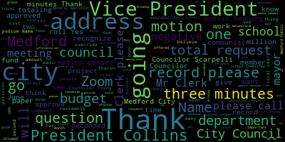
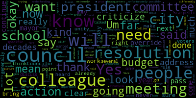
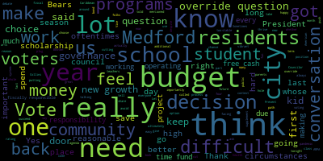
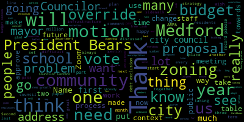
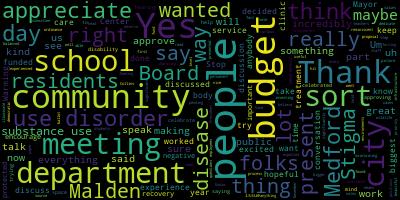
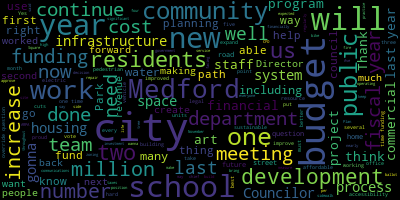
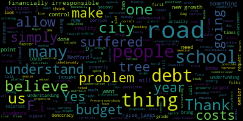
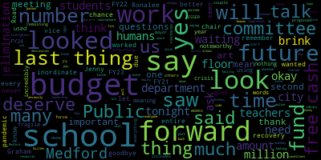
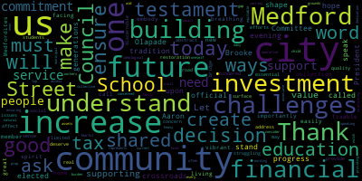

[Bears]: 12th regular meeting, June 11th, 2024 Medford City Council. Mr. Clerk, please call the roll.
[Hurtubise]: Councilor Callahan. Present. Vice President Collins. Present. Councilor Lozaro. Present. Councilor Lemmick.
[Leming]: Present.
[Hurtubise]: Councilor Skripal.
[Leming]: Present.
[Hurtubise]: Councilor Sanchez. Present. President Fares.
[Bears]: Present. Seven present, none absent. The meeting is called to order. Please rise to salute the flag.
[Hansel]: I pledge allegiance to the flag of the United States of America
[Bears]: 24405 offered by Councilor Scarpelli. Congratulations to Mr. and Mrs. Alexander and Lucy Lemme. Be it resolved that the Medford City Council congratulate Mr. and Mrs. Alexander and Lucy Lemme on their 70th wedding anniversary. They were married on June 13th, 1954. Mr. Lemme was born in South Medford and has lived in Medford all his life and attended and graduated from Medford High School. He served in the Korean War and then returned to Medford and married his beautiful wife, Lucy, where they raised their family, Alexander, Josie, Janet, and Paul Lemme. Councilor Scarpelli.
[Scarpelli]: Thank you, Council President. I was informed of this wonderful news that we have two amazing Method residents that are sharing their 70th wedding anniversary, and I wanted just to express our deepest happiness for them. We know that they have three very proud children, Josie, Janet, and Paul. They wanted to make sure that their parents were recognized and just an amazing accomplishment. And 70 years cheesy, that is something to really to applaud. So I just wanted to share that. Thank you, Mr. President.
[Bears]: Thank you, Councilor Scarpelli. Any further discussion? On the motion of Councilor Scarpelli, seconded by Council Vice President Collins. Mr. Clerk, please call the roll.
[Hurtubise]: Councilor Kelly. Yes. Vice President Collins. Yes. Councilor Lozaro. Yes. Councilor Lemi.
[Bears]: Yes.
[Hurtubise]: Councilor Scarpelli.
[Bears]: Yes.
[Hurtubise]: Second.
[Bears]: Yes.
[Hurtubise]: President Behrs.
[Bears]: Yes, I'm in the affirmative. None in the negative. The motion passes. 24409 offered by Council President Behrs. Be it resolved by the Medford City Council that we congratulate the Medford High School Class of 2024 on their graduation and send them our best wishes as they begin their next adventure. We just had graduation last week for the Medford High School class of 2024, and I'm going to recognize Councillor Singh.
[Tseng]: Thank you, Councilor Behrs, President Behrs, for putting this on the agenda. If you look at the year of graduation, 2024, if you do the math and subtract four, you'll realize that these folks entered high school during the pandemic, during the early days of the pandemic. I think it's a testament to their hard work and to the hard work of their teachers as well, that they've made it through and are going really spectacular places. If you look at the futures of our students, a lot of them are taking on great technical work. They're great students who are going to top universities in this country. I think it really highlights and showcases what Medford can be when we pull together. despite the difficult circumstances, despite unideal circumstances, we can still really make an impact on this world. So I'm really proud of these students. I know Counselor Behrs and I both had the opportunity to read a bunch of scholarship essays for a scholarship, and it was so hard, harder than, you know, than ever to choose scholarship winners because the work that these students are doing in class and outside of class, their leadership in extracurricular activities, community service, giving back to Medford is really just remarkable. So thank you for putting this on.
[Bears]: Thank you, Councilor Sang. Any further discussion? I wanna send my congratulations as well. Very impressive group of students, regardless of what they may be doing after. I just hope that they will contribute some of their great success to our community. On the motion of Councilor Seng, seconded by Vice President Collins. Mr. Clerk, please call the roll.
[Hurtubise]: Councilor Callahan? Yes. Vice President Collins? Yes. Councilor Lozaro? Yes. Councilor Lemike?
[Leming]: Yes.
[Hurtubise]: Councilor Scarpelli?
[Bears]: Yes.
[Hurtubise]: Yes.
[Bears]: Yes, I mean from a negative emotion passes to 4411 congratulations to the organizers of mentor portress 2024, it was all by the Medford City Council that we congratulate the volunteer organizers hosts and attendees at Medford fortress 2024 on an incredible day of music and community building. We had Medford Porch Fest recently. It was an incredible success. We saw, I think, over a hundred locations hosting music. I managed to get to three of them, and it was just a really wonderful day for our city to see so many people coming together and out in the streets and just making a great show of Medford's arts, culture, and community. Any further discussion? Vice President Collins.
[Collins]: I would also like to extend my thanks and congratulations to all the organizers of this event and everybody who participated, signed up to host a band on their porch or contributed in other ways. You know, this is the type of thing that Medford residents have been wanting to see more of for a very long time, and it's great to see this event growing and flourishing more and more every year. So thank you and my congratulations to the organizers and to all of the musical acts.
[Bears]: On the motion of the Vice President Collins to approve, seconded by Councilor Callahan, all those in favor, Mr. Clerk, please call the roll.
[Hurtubise]: Yes. Yes. Yes. Yes.
[Scarpelli]: Yes. Yes.
[Hurtubise]: Yes.
[Bears]: Yes. Yes. Negative. The motion passes records. The records of the meeting of May 28th, 2024 were passed to counselor. Let me counselor. Let me, how did you find those records?
[Leming]: I found them in order and motion to approve.
[Bears]: Are there any discussion on the records? on the motion of council. Let me do approve. Seconded by Council is R. O. Mr Clerk, please call the roll.
[Hurtubise]: Yes. Yes. Yes. Yes. Yes.
[Bears]: Yes.
[Hurtubise]: Yes.
[Bears]: Yes. 70 affirmative. None of the negative. The motion passes and the records are approved. Reports of committees 23449 offered by Councilor Zaro, Public Health and Community Safety Committee, June 5th, 2024, report to follow. Councilor Zaro.
[Lazzaro]: Yes, we held a meeting to discuss the wildlife feeding ordinance. A few things came up, but we decided to keep the paper and committee pending some discussion with city staff.
[Bears]: On the motion to approve by Councilor Zaro, seconded by Councilor Callahan. Mr. Clerk, please call the roll.
[Hurtubise]: Yes. Yes. Yes. Yes. Yes. Yes. Yes.
[Scarpelli]: Yes.
[Hurtubise]: Negative. The motion passes hearings 24357 petition for grant of location National Grid incorporated of North and over for 171 Park Street, Medford.
[Bears]: petition for a grant of location, National Grid Inc. of North Andover, Massachusetts, Medford, Massachusetts City Clerk's Office. You are hereby notified that by order of the Medford City Council, a public hearing will be held in the Howard F. Alderman Memorial Chambers and by Zoom at 7 p.m. on Tuesday, June 11th, 2024, on a petition filed by the Massachusetts Electric Company, DBA, National Grid, and Verizon New England, Incorporated, to add one additional joint owned pole located at 171 Park Street, Medford, MA 02155, and permission to locate the wires including the necessary sustaining and protecting fixtures along and across Park Street. National Grid is petitioning to install a new 40-foot Class 3 wood pole at 171 Park Street in order to install a new 50 kilovolt amp transformer to offload existing overloaded transformers on Park Street. A new Zoom link for this meeting will be provided not later than Friday, June 7, 2024. The petition has been filed in accordance with the plan marked National Grid Plan Number WR30955. 090 Park Street, Medford, Massachusetts, 02155, March 28, 2024. Wherefore, I praise that after due notice and hearing as provided by law, it be granted a location for and permission to erect and maintain poles and wires together with such sustaining and protecting fixtures as it may find necessary. Said poles to be erected substantially in accordance with the plan filed here with Mark Park Street, Medford, Massachusetts. Also for permission to lay and maintain underground laterals, cables, and wires in the above or intersecting public ways for the purpose of making connections with such poles and buildings. as each of said petitioners may desire for distributing purposes. Approved by the superintendent of wires approved chief engineer with the following conditions. The grant of location is limited to one additional joint owned utility pole located within the sidewalk between 179 and 171 park street labeled P three nine zero nine one dash one two. Before starting work, the contractor shall notify dig safe and obtain all applicable right of way permits from the engineering division. The project must obtain a public right of way occupancy PRO permit pursuant to section 74 dash one for one of the city ordinances prior to commencing work. Three, no other utility structures, conduits, duct banks, pipes, or any other appurtenances are adversely impacted. National Grid shall ensure that all sewer, water, and drain lines are marked prior to any excavation. Four, placement of the joint owned utility pole must provide at least 36 inch clearance of accessible travel path around the structure in accordance with ADA regulations and city standards. Five, the cement concrete sidewalk restoration shall be done at the time of installation and in consultation with the engineering division per the requirements of an approved PRO permit. Any concrete sidewalk damage during this work must be replaced in kind and cleanly cut at the control joints. Temporary patching using bituminous concrete pavement will not be permitted. The sidewalk restoration of the temporary patch located at utility risers on P3092 must also be restored during this time in accordance with old petitions that were granted by the city. The project site must be swept after installation or daily and shall be kept free of debris for the duration of the installation. Park Street is a very narrow, heavily traveled roadway and requires a mandatory police detail to perform this work. The engineering division recommends that the applicant consult with the Medford Police Department traffic sergeants prior to scheduling this work since work hours may be restricted to outside normal operations. Nine, at least 72 hours prior to the start of the project, National Grid must coordinate a better communications with the director of communications and submit any required information that may be requested to effectively inform the public, signed Adam L. Hurtubise. Do we have a representative of National Grid in person or on Zoom? Thank you for being here. Name and address for the record, please. And if you could just describe the project and give us any information, and then we can open the public hearing.
[Hansel]: Cam Hansel from National Grid. So basically the project is to install a new pole because the transformer that feeds that area is already overloaded. And one of the residents is doing a major upgrade to their service. So that wouldn't be sustainable, which is why the new pole and transformer are needed.
[Bears]: Okay. Do we have the city engineer available to discuss the conditions? We do have the recommendation of the city engineer with the conditions, but I did want to give him a check in a second. Do we have any questions from councilors for the petitioner before we open the public hearing? Vice President Collins.
[Collins]: Thank you, President Burris. Thank you for being here. Just two quick questions. When is the work plan to be done? And I noted the recommendations around sidewalk restoration. I'm just curious how much of the sidewalk is going to be restored? Is it just the area immediately around the pole or is it more of the block? If you happen to know.
[Hansel]: I know the area around the pole will be restored.
[Collins]: What other areas were you... Or just how far up and down the sidewalk will the restoration be extending, or is it just gonna be the area immediately around the pole?
[Hansel]: Yeah, the whole area around the pole will be restored.
[Collins]: Okay. Thank you. And when is the work planned for?
[Hansel]: don't have that information. That's up to the availability of the line crews. So I can give you that.
[Bears]: Okay. Any further questions for the petitioner? Seeing that, I just wanted to note for the scheduling purposes, the condition of coordinating with the police department traffic sergeants. And I did have one question on the sidewalk restoration of the temporary patch located at the utility risers on P3092. Could you go into that anymore? It is a required condition of the project. Oh, was that another patch that was right next to the- I think it would be nearby, but it seems like it has the temporary is still there and it needs to be permanently filled.
[Hansel]: Yeah, that will be filled in as well or restored as well. Okay.
[Bears]: Thank you. At this time, I'm going to declare a public hearing open for anyone in favor, in opposition, or who otherwise has questions about this project. Public hearing is open. Are you in favor of the project?
[Hansel]: Yes.
[Bears]: Is there anyone else who would like to speak in favor, in opposition, or who otherwise has questions about this project? Seeing none in the room, I'm going to check Zoom. I have one question here. I'm going to recognize Klein 170-172. Please state your name and address for the record after I request to unmute you.
[Klein]: Hi, my name is Ralph Klein. I reside at 170-172 Park Street, Medford, Mass. My questions are, there was a utility pole located on the opposite side of the street, directly where they're going to put the pole. So it's on the even side of Park Street. There's a pole existing now that services more than Park Street. It runs up a right of way. So when you put right of way in there, I'm questioning is whether they're going to run wires up to service Salem Street as well. They said it's going to service Park Street, but I want that clarified.
[Bears]: Do you have any response to the question about whether this is going to serve as a Park Street or other streets?
[Hansel]: No, just be Park Street.
[Klein]: At this time, it services houses on Salem Street. I don't think it's for National Grid. It's for cable services at this time. But if they upgrade the transformers, they may decide to run more wires about of the runaway? Across our property, right of way property for 174, 170, 172 and 178 Park Street. I had an issue where I had 34 wires running up the driveway. 24 of them were dead. I don't want this to repeat itself because the wires are low hanging.
[Bears]: Is there any intent to run wires across the street to the other side of the street to service properties on Salem Street?
[Hansel]: No, the pole will just be in the existing electric line where the existing poles already are.
[Bears]: Okay. Mr. Klein, I think that's a different pole and a different company. It sounds like as well. It sounds like that.
[Klein]: No, it's, it's all national grid.
[Bears]: It's all national grid.
[Klein]: You're a national grid. Why did it run off that property off that pole? It's the front of my home. I think I know what I see.
[Bears]: Okay. Let's just interpreting what you said. I have the petitioner here saying they do not intend to run wires across the street onto your property.
[Klein]: Okay, well, can we have that in the contract so it doesn't happen? Because if they're sharing this with Comcast and other people, they could decide to run the wires. And that's not acceptable. They don't even have permission for the existing wires.
[Bears]: I'm going to ask the administration, the city administration, the chief of staff, do you know if the chief engineer, the city engineer is available at some point to answer this question?
[Nazarian]: I'm not certain, but I can certainly contact our city engineer. I know that our DPW commissioner is on the line, but I don't know if he's prepared to answer the question. But I'm happy to contact our city engineer and see if he's available to jump on this.
[Bears]: Okay. I didn't see Tim, but I see him now. Commissioner McGibbon, could you raise your hand if you can comment on this or if you think there is a condition that we can put in on this?
[Nazarian (echo)]: I can certainly contact our city engineer. I know that our TPW commissioner is on the line, but I don't know if he's prepared to answer the question. I'm happy to contact our city engineer and see if he's available to jump on this one.
[Bears]: I didn't see Tim. I'm gonna unmute you when the audio is off, Tim. Thank you. You can give me a thumbs up.
[McGivern]: Hello, you got me?
[Bears]: Yeah, we hear you. Thanks, Tim. Recognize Commissioner McIver and DPW.
[McGivern]: Thank you. Could I just get a, I caught most of it, but is the question, Can we disallow a pull on the service from the utility poles to a property? Can we rephrase the question for me?
[Bears]: Yes. There is a petition. Mr. Klein, if you want to rephrase the question.
[Klein]: What I'm saying is there is a pole existing on the even side of Park Street opposite where you're going to put this new pole for a transform. Off the said pole on the even side of Park Street, there are wires that run the home 174 Park Street, it's up the right of way. It also services houses on Salem Street for cable, phone, and other things. There were 34 wires that ran up my driveway, low-hanging wires, because the companies won't put anything in. I want to make sure the National Grid is not planning, and they aren't going to put any more wires going in, forcing other customers.
[McGivern]: Okay, I think I understand. National Grid wouldn't be able to, they're not asking for any service connections, so I'm presuming the wires that run across your property are service connections.
[Klein]: Is that correct? There is one that services the home behind me. At 174. At 174, which is up the driveway. It's 100 feet approximately from Park Street.
[McGivern]: Okay, I can tell you the nature of this project has to do with capacity and adding capacity to that particular run. It's not a service project, so National Grid can confirm this, but I do not believe they are installing any services as part of this project. This project is a utility pole between two existing utility poles on that same run. So unless you are, unless properties that They wouldn't be able to go over your property either without your permission with a service line. So they wouldn't be allowed to do that unless you provided the permission. So that would be a different process, a different project.
[Klein]: Okay, so at this time, they're not allowed to run any more wires up over this right of way.
[McGivern]: This approval does not include that.
[Klein]: Okay. So we'll have to be approved if they do it.
[McGivern]: Well, if they have a service customer who requests service, whether it's one of their leases like Comcast or something like that, Verizon, or if it's them, they have to follow property rules. So they wouldn't be able to violate, trespass, encroach, or anything like that. They would have to run legitimate services at the right height, over the right property, well within their rights. They're not allowed to do it outside their rights. Hopefully that helps.
[Klein]: If there is a time, I'd like to contact you, come out and set up a meeting with you so you can see what I'm speaking about, just so you could understand and see how.
[McGivern]: Yep, I'll probably run you through the engineering office. Owen couldn't attend tonight, but Owen Wattel is a city engineer. So that's gonna be your best bet. And we might be able to advise on the land management piece of it and rights of utilities, et cetera. So we can help you out there, understand that piece.
[Bears]: Okay, thank you very much.
[McGivern]: You're welcome.
[Bears]: Thank you, Mr. Commissioner. And thank you, Mr. Klein. Any further comments in the public hearing on this grant of location? Seeing none, I declare the public hearing closed. Is there a motion? Vice President Collins.
[Collins]: Motion to approve pending the public comment period with the conditions recommended by the city engineer.
[Bears]: On the motion of vice president Collins to approve pending the six day public comment period and adopting the conditions of the city engineer seconded by vice by councilor Kelly and Mr. Clerk, please call the roll.
[Hurtubise]: Yes.
[Lazzaro]: Yes. Yes.
[Scarpelli]: Yes. Yes.
[Hurtubise]: Yes. Yes.
[Bears]: Yes. Seven affirmative negative. The motion passes and the grand application is approved. Thank you. 24367 public hearing proposed amendments the Medford zoning ordinance chapter 94 public hearing notices Medford City Council June 11 2024. The Medford City Council, a subsequent public hearing. The Medford City Council shall conduct a public hearing on June 11, 2024 at 7 p.m. in the Medford City Council Chamber on the second floor of Medford City Hall. 85 George P. Hassett Drive and via Zoom, a link to the public hearing will be presented no later than June 7th, 2024 on the following proposed amendments to the City of Medford zoning ordinance. One, amending the format of the table of use and parking regulations to replace the parking and loading code columns with specific parking and loading requirements. Two, amending section 94-12 definitions to add new defined terms and revise existing definitions. 3. Adopt a new GIS-based digital zoning map. Adoption of the new map format is not intended to result in any material changes to zoning of any parcels within the City, but is intended to confirm the best information available to the City regarding the existing zoning designation for all properties in the City. Amending sections 94-1.4 94-6.4.3 subsection 2, 94-11.7.2 subsection 4 and 94-12 to exempt municipal uses from certain use parking and directional dimensional requirements. The full materials for the amendment can be viewed in the office of the city clerk, city hall room 103, or on the city's website at www.medfordma.org, slash department, slash planning, dash development, dash sustainability, by clicking on current CD board filings. If you need reasonable accommodation to attend, participate in either meeting, please contact Francis Nwaje, telephone 781-393-2439, or email fnwaje at medford-ma.gov, per order, Adam Hurtubise, city clerk. would recognize vice president Collins, the chair of the planning and permitting committee.
[Collins]: Thank you, President Behrs. This has come before City Council at a regular meeting once before when we procedurally had to refer it to the Community Development Board before it can come back to us for a formal vote. This is the first package of zoning change proposals to come out of the Planning and Permitting Committee. That committee has been working all year so far with the City Council's new zoning consultant on a host of zoning-related goals. And this is that first set. These are namely What I would characterize as formatting, streamlining, and procedural changes. We'll get to our discussions of more of those bigger themes and bigger changes later in the year. These are simpler. The first is to, as was stated, just to quickly restate that we all know what we're talking about, changing the format of the table of uses and parking regulations so that that table is more readable. The intent of this is to put the parking and loading requirements into a format that is more intuitive, easier to understand switching away from a code based model. And so that it's all on the same page. So people who would like to do business in the city of Medford don't have to flip through our rather long code of ordinances to find what they're looking for. The second is many definitions were amended or added into the definitional tables that these could be made useful later in the zoning process or to just update and modernize the definitions that we're currently using. All of these changes were rigorously considered with city staff as well as zoning consultants over the course of several meetings in April and May. We are also taking a vote to adopt the GIS digital version of our zoning map. There are no substantive changes being proposed to the zoning map. This is just to make it so the official on-the-book zoning map for the city of Medford is the one that is digital, is the one that has GIS letters, and is not the one that is quite literally paper and colored pencil. A good step for year 2024. Finally, the last proposal in this package is to exempt certain municipal uses from the table of use in parking regulations and the table of dimensional requirements. This is to streamline the process for the building of certain city infrastructure so that those buildings, for example, hypothetically, a new fire infrastructure, wouldn't have to go through the cumbersome zoning ordinance, zoning, sorry, zoning variance regulations that it would otherwise potentially be subjected to. I would motion to take the first vote to be ordained after a comment from my colleagues.
[Bears]: I think we do have to open a public hearing. First, I will recognize the Director of Planning and Development Sustainability, Alicia Hunt. And I do want to also just note that the Community Development Board did have one recommendation. There was a motion to recommend that the approval of the zoning amendments with the edit to move the number four superscript for the footnotes from the leftmost column to the parking column. And I will recognize Director Hunt.
[Hunt]: Good evening, thank you, councilors. I've enjoyed working on this with you. The CD board, as you noted, had one minor edit that was typographical. I think Councilor Collins really summarized everything. I don't have anything additional to add. I am in favor of this on behalf of the administration. And if there are questions, I am available as well as senior planner, Danielle Evans is available to answer any questions.
[Bears]: Thank you, Director Hunt and Planner Evans for being here. This time I'm going to open the public hearing to anyone in favor, opposed, or who has other questions about this item. Public hearing is open. Director Hunt, did I hear that you were in favor?
[Hunt]: Yes, I am.
[Bears]: Is there anyone else in favor, in opposition, or who would otherwise like to speak in the public hearing on these proposed amendments? Seeing none in person, I will review Zoom. Seeing none, this portion of the public hearing is closed. There was a motion from Vice President Collins to approve. Seconded by Councilor Zaro. Vice President Collins.
[Collins]: Need I make a motion to adopt the recommendation from the CDB in my motion?
[Bears]: Yes, that would be good.
[Collins]: Motion to approve with the typographical suggestion from the CDB.
[Bears]: Second. On the motion to approve with adopting the recommendation of the Community Development Board by Vice President Collins, seconded by Councilor Lemming. Mr. Clerk, please call the roll.
[Hurtubise]: Councilor Kellerman? Yes. Vice President Collins? Yes. Yes. Yes. Yes. Yes.
[Bears]: Yes, 70 affirmative, none negative. The motion passes. Petitions, presentations, and similar papers, 24-406 petition for a common victor's license, Dave's Hot Chicken, CQ Chicken, Medford LLC. On file, we have business certificate, the petition, letter of compliance, state tax ID, workers' compensation, and it's been approved by treasurer, collector, building department, fire department, Police Department and Health Department has approved pending inspection. Is there a representative from Dave's Hot Chicken or CQ Chicken Medford present? If you could raise your hand on Zoom or stand in the chamber. And I will recognize Councilor Scarpelli, Chair of the Subcommittee on Licensing, Permitting and Signs. I'm not seeing, oh, here we go. We do have a representative, but I'll recognize you first, Councilor Scarpelli.
[Scarpelli]: Okay, thank you, Councilor Behrs. This is, again, a very popular location and it looks like everything is in order. I will move approval after we hear from any questions from my colleagues.
[Bears]: Thank you, Councilor Scarpelli. I'm going to recognize Al Graziano, DHC, Dave's Hot Chicken. If you would like to share anything else about your petition, and then we'll hear from questions from councilors. Please give us an address for the report, please.
[Graziano]: Yes, hi, good evening. My name is Al Graziano, and the Dave Sludgek location will be at 616 Fells Way.
[Bears]: Thank you. Do you have anything you'd like to share about your petition?
[Graziano]: Nothing at this time, just want to thank the city. The process throughout the entire build-out has been incredibly helpful with the city, and again, just want to say thank you.
[Bears]: Thank you. Any questions from members of the council? Seeing none, on the motion of Councillor Scarpelli to approve, seconded by. Seconded by Councillor Lazzaro. Mr. Clerk, please call the roll.
[Hurtubise]: Councillor Kelly? Yes. Vice President Collins? Yes. Councillor Lazzaro? Yes. Councillor Fleming? Yes. Councillor Scarpelli?
[Bears]: Yes.
[Hurtubise]: Councilor Stanton.
[Bears]: Yes. Yes, I have an affirmative, none a negative. The motion is approved. 24371, and then I'll recognize Councilor Collins. 24371 has been withdrawn by Councilor Scarbelli. Vice President Collins.
[Collins]: Thank you. I would motion to suspend the rules to take papers 24415, 24045, 24410, 24413, 24414, out of order to join those papers for consideration and to suspend Rule 21.
[Bears]: On the motion of Vice President Collins to take papers 24415, 24045, 24410, 24413, and 24414 and join those for consideration and suspension of Rule 21, seconded by? Seconded by Councilor Callahan. Mr. Clerk, please call the roll. Councilor Callahan. Yes.
[Hurtubise]: Thank you. Vice President Collins.
[Collins]: Yes.
[Hurtubise]: Councilor Lozaro. Yes. Councilor Fleming.
[Scarpelli]: Yes.
[Hurtubise]: Councilor Scarpelli.
[Scarpelli]: I question the chair on the ruling.
[Bears]: We're voting on a motion.
[Hansel]: I vote no.
[Hurtubise]: Councilor Sanchez.
[Bears]: Yes.
[Hurtubise]: President Ferris.
[Bears]: Yes. Six in the affirmative, one in the negative. The motion passes. We have five papers that have been joined for consideration. I will read those papers, and then we will hear a presentation from the mayor, and then we will hear questions from counselors, and then we will hear public comment. The five papers that were just joined for consideration are 244045, offered by Mayor Brianna Longo-Kern, fiscal year 2025 budget submission. dear president bears and members of the city council pursuant to mass general law chapter 44 section 32. I respectfully request and recommend the city council approve the proposed fiscal year 2025 general fund budget as amended and water and sewer enterprise fund budget. Total submitted appropriation for all departments, including schools is 218,000,089. Account details are included within the budget presentation, which is available online at medfordma.org. Department, assessor, 2025 salaries, 432,856. 2025 ordinary, 156,927. Total request, $589,783. Legislative, total request, $312,689. Executive, total request, $673,270. Finance, total request, $854,314. Treasury, total request, $757,494. Law, total request, $530,036. Information technology, total request, $357,366. Clerk, total request, $406,364. Elections, total request, $327,435. Licensing commission, total request, $5,800. Conservation commission, total request, $7,500. Planning development and sustainability, total request, $819,207. Community Development Board total request $9,200. Board of Appeals total request $12,500. Historic District Commission total request $5,000. Historical Commission total request $35,000. Cable total request $208,424. Formal commission total request $5,400. Bicycle commission total request $1,500. Building department total request $1,031,543. Electrical total request $678,805. Facilities total request $1,838,745. Police total request $14,632,850. $1,263. Traffic supervisors total request $361,525. Traffic commission total request $30,500. Fire department total request $15,126,017. Civil defense total request $9,840. Parking department total request $951,741. Recreation Department $607,787. Medford Public Library total request $2,247,934. Chevalier total request $32,000. DPW Highway totaling $12,502,223. That includes the trash contract. DPW Cemetery totaling $1,118,050. DPW parks totaling $957,577. DPW engineering totaling $547,752. DPW forestry totaling $623,989. Health totaling $810,978. Council on aging totaling $277,157. human resources totaling $269,480, diversity equity inclusion totaling $118,502, veterans totaling $444,361, contractual agreements totaling $1,500,000, salary compensation study totaling $75,000, Workers' compensation totaling $788,000. Insurance totaling $28,274,939. Pensions totaling $16,281,536. Bonds and interest totaling $5,351,319. and education totaling $76 million for a total of $189,407,845 in the general fund. To meet these appropriations, the sum of $188,875,622.64 be raised and appropriated from the fiscal year 2025 tax levy and other general revenues of the city. that $75,700 be transferred from the sale of cemetery lots, that $239,115.65 be transferred from cemetery perpetual care funds, and $217,406.71 be transferred from casino mitigation funds. for the water and sewer enterprise fund. Water and sewer budget total request $26,937,511. Water sewer bonds and interest $1,743,644 for a total water sewer enterprise fund budget of $28,681,155. Further, that $28,681,155.00 be funded by anticipated revenue of the Water and Sewer Enterprise Fund. Thank you for your kind attention to this matter. Mayor Brianne Lego-Kern. So that's the budget. We have had seven budget meetings so far with the city departments, with our schools over the past several months. You can find the records of those meetings online and the discussions that we've had so far. I'm going to read the other three papers now. 24410, dear President Behrs and members of the city council, in addition to a $76 million general fund appropriation for the school department, which I have submitted within the fiscal 25 budget, I respectfully request and recommend that your honorable body appropriate an additional $1,007,500.00 in American Rescue Plan Act funds for the fiscal 25 budget to stabilize the school department budget. These two appropriations, if approved, provide the school department with $77,750,000 to operate the Medford Public Schools in fiscal 25. Further resources could be directed to the school department in fiscal 25 and beyond if the city council votes to place an override question on the November biennial state election ballot and voters approve such a measure. Thank you for your kind attention to this matter. Sincerely, Brianna Lugo-Kern, Mayor. 24413 proposition two and a half debt exclusion order and ballot question for fire headquarters. Ordered that the city pursuant to general law chapter 59 section 21 C subsection K shall seek voter approval at the biennial state election to be held on November 5th, 2024 to assess taxes in excess of the amount allowed pursuant to general law chapter 59 section 21 C. for the payment of principal and interest on bonds, notes, or certificates of indebtedness issued by the city to pay the cost of designing the project, equipping and furnishing the project, site improvements, and all other costs for a new fire station headquarters, and that toward that end, the elections department is hereby directed to notify the Secretary of the Commonwealth of the within vote of the city council to place the following question on the ballot for use by the city at the november 5 2024 biennial state election the question would read as follows shall the city of medford be allowed to exempt from the provisions of proposition two and one half so-called the amounts required to pay for the bonds issued in order to pay the cost of constructing a new fire station headquarters to be located at 120 main street in medford massachusetts including the payment of all costs related to designing the project, equipping and furnishing the project, site improvements, and all other costs incidental and related thereto, yes or no. 24414, proposition two and one half override order and ballot question for schools and DPW, order that the city pursuant to general law chapter 59, section 21C, subsection G, shall seek voter approval at the biennial state election to be held on November 5th, 2024, to assess taxes in excess of the amount allowed pursuant to general law section 21c for the general operation of medford public schools and department of public works and toward that end that the elections department is hereby directed to notify the secretary of the commonwealth of the within vote of the city council to place the following on the ballot for use by the city at the November 5th, 2024 biennial state election. Shall the city of Medford be allowed to assess an additional $3,500,000 in real estate personal property taxes for the fiscal 2025 general operations of Medford Public Schools, $3 million, including but not limited to funding costs of teachers, literacy coaches, behavior specialists, administrative assistants, and nurse physicians, and for regular facilities maintenance. and for FY 2025 general operations of the Department of Public Works, 500,000, including but not limited to additional staff for road and sidewalk infrastructure repair for the fiscal year beginning July 1, 2024, yes or no? The final paper is 24-415, proposition two and a half override order and ballot question to invest in future of Medford public schools, ordered that the city pursuant to general law chapter 5921C, subsection G, shall seek voter approval at the biennial state election to be held on November 5th, 2024, to assess taxes in excess of the amount allowed pursuant to General Law Chapter 5921C for the general operation of the Medford Public Schools, and that toward that end, the Elections Department is hereby directed to notify the Secretary of the Commonwealth of the within vote of the City Council to place the following question on the ballot for use by the City at the November 5, 2024 biennial state election. Shall the City of Medford be allowed to assess an additional $4 million in real estate and personal property taxes for fiscal year 2025 general operations of the Medford Public Schools to create a high school schedule that increases access to arts and vocational programming, expands classroom instructional opportunities, and for classroom teacher and paraprofessional compensation for the fiscal year beginning July 1, 2024. Yes or no? Thank you for bearing with me as I read all of those papers. I am now going to recognize the Mayor of the City of Medford, Brianna Longo-Kerns. Thank you.
[Lungo-Koehn]: Good evening. Thank you, president bears and counselors for allowing me some time to speak to you about the fiscal year 25 budget. Before I begin, I must take this opportunity to thank everyone who contributed to the completing this budget and delivering it to your honorable body by the newly established deadline per the budget ordinance, compiling this comprehensive breakdown of the city's financial outlook took countless hours of preparation, debate, and insight from our department heads and our budget team. led by our Finance Director, Bob Dickinson, Assistant Finance Director and Budget Director, Courtney Cardillo, and my team in the Mayor's Office, led by Chief of Staff Nina Nazarian. I also need to credit both Courtney and our Communications Team, Director Steve Smerdy, and Emma Tombley, our communications specialist for putting in so many hours of work on the nitty gritty aspects of the budget book that tend to get overlooked. This work is invaluable and will hopefully lead us to a second Distinguished Budget Award from the Government Finance Officers Association. Last year, I stood before you and laid out the challenges that lay ahead for fiscal year 25. Our looming fiscal cliff due to the expiration of ARPA and ESSER funding, the continued rise in consumer prices, as well as the decades of neglect of critical infrastructure upkeep as it relates to our roads, sidewalks, water and sewer infrastructure system that are catching up to us now, including our buildings. Most of these are not new or surprising obstacles. They have always been at the forefront of financial planning, guiding our strategy and shaping the decisions we make. Now, as we approach the end date, it's important to understand that measures we must take to ensure that our city and school services, programs and projects are properly funded and staffed. As I wrote in my budget message last week, the school's budget was by far the toughest one to develop. Due to the timeline of the budget ordinance, we needed to supply the school department with an estimated operating budget figure in March. At that time, we did not have concrete figures for the city's previous year's actuals or next year's projections, thus making the school's number more of a guide than a strict dollar amount. But it's no secret that the schools used the remaining ESSER funds last year and are operating at a deficit, committing one-time funding sources to plug this gap continually is not a long-term solution. The school budget was facing a cliff, and cuts had to be made to right-size our spending and balance the fiscal year 25 budget. Our city team then thoroughly reviewed each line item on the city side, dove deeply into expenditures, compared numbers with previous year's actuals, and worked to bring those figures down to a more reasonable and sustainable level in order to provide as much funding to the schools as possible. Additionally, we reviewed our new growth numbers, workers' compensation numbers, assessed IT vendor contracts, and really dove headfirst into the fine details of the city budget. The hard work over the last two months adjusting the city budget revenue projections and other city line items allowed us to increase the school budget from our fiscal year 24 numbers of 71,200,000 to 76 million for fiscal year 25. That's nearly a 7% increase of general fund allocated monies. I'm immensely proud that we're able to come to this number and supply the schools with a significant increase from last year. but it's still not enough to avoid cuts and creates additional obstacles to learning. I think it's important to understand just how we've gotten to this point at both the school district and city hall, with each budget season being such a challenging and in many ways, a discouraging process for all involved. Each year, the budget I propose and the budget that this honorable body votes on is balanced. And while that allows us to pay for all our obligations, it creates a situation where most of our costs, which generally significantly increase year over year, exceed the amount we're able to raise in taxes. Per Massachusetts general law, Medford and all other municipalities in the Commonwealth cannot increase our tax levy, which is one of the major components of the city's revenue sources. We raise from real and property taxes by more than 2.5%. meeting the operating budget can't keep up the cost of living. This in some cases creates the need for scaled back programming, staff reductions and other resource losses to properly balance the budget. I know there has been some discussion on rating our reserve funds to plug our structural deficit gap. That is not sound financial practice. Dipping into our savings to fund something for one year is just simply a bad idea. It's why our team worked so hard to reduce our reliance on one-time funding to offset revenue loss in my previous four budgets. The funding we received from the federal government with the passage of the American Rescue Plan Act, also known as ARPA, allowed us to inject capital to plug various gaps during the early years of the pandemic when revenues were down. By making strategic one-time investments, we were able to save on annual operating budget space, which created more flexibility when crafting the budget. The pandemic also caused us to reevaluate much of our thinking on the use of one-time funding. It also changed the way the public interacts with government, so much so that we now must allocate funding to new items that have become essential as post-pandemic life continues. For example, prior to 2020, City Hall did not regularly host meetings. Now that is common and expected practice, which requires more resources, technology, infrastructure, and staff training, which all carry an expense. That brings us to an override measure, which I'm proposing to appear on the ballot in November. This has been a topic of debate in the council chambers, my email box, in homes, coffee shops, ball fields, and around our squares for several years. I think two things are simultaneously true as it relates to an override. It would undoubtedly help us maintain and hopefully enhance our services, and it would create hardships for many people in our city struggling to stay afloat financially. Our financial task force established earlier this year has been meeting regularly to work through, negotiate, and discuss the best path forward for the city, schools, and community. Considering the financial pressures many of our residents are facing, as well as the need to increase our revenues to account for costs outpacing our 2.5% levy threshold, we have concluded that in November, the voters should decide on if they want to adequately fund our programs, positions, and projects. one on a debt exclusion for a new fire headquarters, and two Proposition 2 12 overrides. The first override question would ask voters to approve raising $3.5 million to stabilize Medford Public Schools funding, including but not limited to funding costs such as teachers, literacy coaches, behavioral specialists, administrative assistants, nurses, and for regular facilities maintenance. And for our Department of Public Works, 500,000 for additional staff for road and sidewalk infrastructure repairs. The second override question would ask voters to approve raising 4 million to invest in Medford Public Schools to create a high school schedule that increases access to arts and vocational programming, expands classroom instructional opportunities, and for classroom teacher and paraprofessional compensation. The debt exclusion question would ask voters to approve funding of a bond of up to 30 million to be issued for the design and construction of a new Medford Fire Department headquarters at 120 Main Street. The expected cost of these three combined questions would increase property taxes for the average single family home, which is assessed at about $770,000 by approximately $446 per year. That would be about $37 per month. But since our schools need to be right-sized now, I've asked your body to approve an amendment to the budget to increase the school's budget allocation from 76 million to 77.75 million through the use of 1.75 million in one-time funding advance, 500,000 of which will fund the purchase of Chromebooks and laptops and begins an annual refresh cycle to maintain our district-wide technology. Now this is one-time funding, so if the first override question does not pass, then we will be right back here in the same position next year with cuts on the table. But passing these overrides is by no means an easy decision, and I recognize that. In fact, coming to these numbers was a painstaking process, and I'm still wary of the financial burden increased taxes may have in our community, especially in those struggling to get by, and that weighs heavily on me. Ultimately, I believe the question of pass would fulfill our greatest needs, mainly in our schools and for our children, but also help make progress on the number one complaint we get, which is the conditions of our roads and sidewalks. I know this is the right decision because the alternative will mean more cuts and more challenges for our residents. And in my opinion, we cannot afford to continue on that path. Our residents deserve the right to take a vote on this. This is a big decision that requires considerable thought. I truly believe, however, that approving these ballot questions is the right thing, and I hope the majority of the community agrees. There are, of course, other aspects to this budget than just the Proposition 2 12 override questions. many of which are quite encouraging. We are making significant investment in several core city systems, maintaining as much service as possible and providing a sustainable roadmap for future big ticket expenditures, like a new fire headquarters and a new Medford High School. We're making another significant investment in our library, increasing its budget by nearly 12%. This coupled with last year's increase of about 18% has resulted in a more than doubling effect on the city's library budget in the last decade. This has allowed everyone in our community to get better access to the resources and programs that our fabulous library offers. We're increasing the budget for our department of public works to keep up with increased costs in services, as well as give us some flexibility as we continue to address the backlog of stumps, tree pruning, repairs, et cetera, to update our aging water infrastructure and improve accessibility and pedestrian mobility in our squares and green spaces and throughout our entire community. The city continues to work towards goals laid out in our Climate Action and Adaptation Plan, which was finalized in fiscal year 23. My administration is committed to removing barriers that would preclude residents from sustainable practices, including financial barriers. The city has partnered with Garbage to Garden to launch a free municipal curbside composting program for eligible residents. This program launches in fiscal year 25, which is July 1st, 2024, and aims to be widely accessible and convenient, making it easy for residents to participate in creating a greener, more sustainable future. The city has also received 300,000 in grant funding to expand public outreach and strengthen support specifically for underrepresented and underserved communities interested in decarbonizing their homes and vehicles through energy efficiency, solar, and electricification of heating, water heating appliances, and electric vehicles. This program, Electrify Medford, will seek to educate residents on available resources and help them make these changes in their own homes. As part of our commitment to residents, we are always looking for ways to expand diversity, equity, and inclusion throughout the city and create an environment of belonging for our entire community. Our DEI director has been working with our human resource director to update best practices for recruiting, interviewing, and hiring. Due to this work, the city has been able to recruit, hire, and retain diverse candidates for a variety of city positions. This team also hosts trainings and other professional development opportunities to ensure employees have all the tools they need to uphold our values and mission, something that will be enhanced and continued through fiscal year 25. We have secured $850,000 to help transform the Dorothy T. Hegner Center into a municipal vulnerability preparedness site. The Hegner Center will be renovated into a community space that will be used to coordinate emergency responses and will serve as a resiliency hub for residents during climate emergencies. The site will also host an afterschool program through the city's rec department and other community oriented events when not being used for emergencies. Last year, our engineering team got to work on repairing approximately 90 roads that have been identified as prime candidates for crack sailing in the pavement report from 2021 and the updated report from 2024. The city will deploy over 180,000 in ARPA funding to crack sail the additional streets on the list for the next several years. Crack sailing is a preventative measure that prolongs the life of roads and avoids having to make major structural repairs in the near future. The engineering division has also identified six roads that are among the most in need and are working through planning process with our administration with the hope of repaving the season. Our infrastructure needs reach beyond our streets, thoroughways and pedestrian paths. A major component of the work being done by our DPW team is the ongoing water meter system replacement project. Initiated in fiscal year 24, the team in the water and sewer division is continuing to install new state-of-the-art systems in homes across the city. These meters are a crucial step in addressing the aging water infrastructure, delivering accurate readings for customers. It's also evident that our water and sewer infrastructure is aging. The system dates back decades and after years of neglect to properly repair or place pipes, we are now in the process of devising a comprehensive strategy that will begin to assess the future needs of our system. This will take years and will be very expensive, but it must be done. In addition to improving our public infrastructure, we're also been working to enhance and upgrade many of our public spaces for the community to utilize and enjoy. Current projects that are nearing completion include Gillis Park and Car Park. Gillis is a 1.4 million renovation project that will upgrade accessibility features, improve the baseball field and add new park amenities. Car Park phase two is additionally expected to kick off soon. The City of Medford Public Schools have also begun construction on a new universally accessible schoolyard at the McGlynn School, which is expected to be completed by the next school year. The playground will go beyond federal Americans with Disabilities Accessibility Standards upon completion, making this space one for all to enjoy. As I toured the project a couple of weeks ago, I was in awe of how wonderful the space will be for everyone in our city. It's no secret that one of the key measures of our financial health is the revenue we generate from commercial development. While it's important that we expand our tax base in this sector, we must also consider the enormous barriers, both structurally and financially, for families, workers, and individuals attempting to find meaningful and sustainable housing in our city. We are bringing over 500 new residential units to the community through eight new developments. To further support the housing crisis that is affecting nearly every municipality, we have allocated nearly 400,000 in funds from ARPA to offset permitting costs of renovations and upgrades to current and new affordable housing units at the housing authority as well. Through successful negotiations, we've gained leverage with our 40B developers to bring more community benefits to the planning process, like better pedestrian accessibility, reduction of potential traffic congestion, more open space, more access to public transportation, and more affordable housing units were the priority for Medford residents. A lot of this hard work on the housing development side is thanks to the work of this Medford City Council and your push for zoning rethought codification, as well as establishing affordable housing trust, which will use various funding streams to help facilitate more affordable units coming to market. Your honorable body in collaboration with our planning development and sustainability office are now working on the next phase of the zoning process. Thank you. Before I conclude, I want to highlight a few other projects and programs that our staff has worked so hard to bring to life. We secured a Massachusetts School Building Association loan to build a new state-of-the-art high school for our students and began the planning process, which will continue in fiscal year 25. S&P Global affirmed the city's double A plus credit rating, the second highest possible rating for a municipality. We continue to onboard several senior tax workers to assist with tasks across our departments. The city reached its goal of planting 200 trees in 2023, which built upon the 2022 goal of 180 trees. We continue to install art murals. Our most recent was by artist Jamie Chan at Wright's Pond. We unveiled the new art exhibit space and new home of arts collaborative Medford on Mystic Ave. We installed five new electric vehicle charging stations and four new bike stations at high priority locations around the city. In the fall, we broke ground on Clippership Connector, a path located along the Mystic River that will connect more than 10 miles of continuous greenway and aims to provide a safer route between Medford Square, the Andrews, McGlynn, and Riverbend Park. Our tree warden secured $100,000 grant to help strengthen the resiliency of our urban forest network. We are continuing to partner and support amazing community events like the Farmer's Market, Run Medford, Oktoberfest, Circle This Way, PorchFest, and so much more. We continue to expand city communications offerings across our four environmental justice languages, Spanish, Haitian Creole, Brazilian Portuguese, and Arabic. In addition to the new city website having the capability to translate, the communications department is working with the Office of Prevention and Outreach to build a user base in the reverse 911 system to translate messages. The city's digital permitting system is additionally now capable of translations into two languages. We replaced parking meters throughout the city with new parking kiosks, offering more ways to pay and increase accessibility. By establishing a new zoning district in partnership with the city council, we continue to prioritize mixed use development. As I'm sure you know, this is just a brief overview of all the work that everyone has done over the last year and the investments we've made that will help build on the vision we share for our city's future. We have worked in tandem on a variety of critical issues, be it zoning reform, the housing production plan, or the capital improvement plan. I wanna thank the city council for being a thoughtful partner in government. You all have worked extremely hard over the last year to move forward many key priorities and improve efficiency on a number of fronts. Before you debate the budget, please know I'm here to answer any questions you may have. Thank you.
[Bears]: Thank you, Madam Mayor. We're going to go to questions from councilors. I am just going to say before that, I just wanted to return the thanks to you for your collaboration, establishing the budget ordinance, getting started on this process so early, having had all of our meetings happen before this meeting and not after this meeting. I think we've really opened a new era in an open process where we can have those questions and have the council be a part, a collaborative part of the budget process. So I just want to thank you for that. It's been a great few months, some long meetings, but a great few months. I'm going to recognize Vice President Collins, Councilor Zaro, Councilor Scarpelli, Councilor Sang, Vice President Collins.
[Collins]: Thank you, President Beers. Thank you, Mayor. Nice to see you. Nice to see you too. I want to thank you for the comprehensive proposal. I also want to thank you for presenting each of these pieces in context of one another. For me, that is the theme and the precondition for this budget season is all of these pieces have to work together. This is my third budget season that I've had as a councilor. This is the least chaotic one so far. Let me put that another way. We're facing some really big difficulties here. The budget process has always been difficult. It's been difficult while I've been on the council. I know it's been difficult before. We're coming off of a really difficult period. I've always made it clear what my red lines are. This collaborative process has allowed us to reach a budget plan that I am comfortable and happy to put forward tonight. We have known for a while that Medford has a funding problem. This has been the topic of so many conversations between me and my colleagues in these chambers, outside of these chambers, the school funding problem and infrastructure funding problem, the capacity building problem, the problem of weaning off of one-time funds. These are not problems that are unique to Medford. They're problems that we have to work through. In the two and a half years that I have been on the council, we have discussed, I think, every mechanism that could contribute towards the solution. As a council, we've made zoning changes that could promote new growth, and we're working on more in our continuing zoning work that we'll put to votes later in the term. We've discussed the city's ARPA strategy. President Behrs and I even proposed an override back in 2022, though it did not move forward, and that was robustly discussed in the previous term. This year, everybody is well aware that countdown clock on our strategy for the future is hitting zero. ARPA and ESSER are going offline. So since last fall, the financial task force, which was convened last year as a condition of the FY24 budget, has been meeting to talk about what's next. I've been really proud to be a part of that process, which I joined when I joined city council leadership at the beginning of this term. And I think that that has been part of that that really important critical pivot towards greater collaboration, which has also been affirmed by you and your staff's participation in the budget ordinance process, as well as this collaboration on meeting the needs of this budget season. This is the culmination of many meetings over many months discussing precisely what our needs are and how to meet them. We have rigorously considered the needs facing Medford public schools and city infrastructure. Among these branches of government, we certainly don't always agree, but the bottom line is that there's a set of facts and a set of goals that we are completely aligned on. then I also believe that the community fundamentally is aligned on. We need to maintain at least level service at MPS, we need to staff it properly, and we need to enable public education to start getting better. We need our roads and sidewalks to start getting better. We need to be in a position to pay our city and school staff competitively, and unless we take action, those things will not happen. Our schools will not be what we want them to be, what we need them to be. We will lose students to private schools, and those who cannot afford that type of expense will suffer the most. Our infrastructure will depreciate. Those costs will get passed along to individuals at even higher rates, and we will lose good city workers to other municipalities or the private sectors. There's always been a lot to discuss in how we solve these problems, but I truly believe that, for the most part, we are aligned on these facts and these goals, because we all know that those outcomes are unacceptable. And I think a hallmark of this proposal on how to pivot towards the future hinges on a combined approach of coming out of the reason that we're Sorry, can you tell I'm nervous? This is only the biggest vote that we take all year. Pardon me. Just breaking the fourth wall here for a sec. Deep breaths. You know, we only had ARPA and ESSER to wean off of in the first place because we're coming off of such a hard time. And now we're adapting to that new normal, figuring out what it will require of us, and taking the affirmative steps to gain the revenue that we need to keep Medford a place that supports the people that live here. So for me, this budget is conditioned on its context. We are considering it in the context of two override proposals, one from President Behrs and I, one from you, Mayor, totaling $7.5 million, which if they pass, will start stabilizing our school and city operating budgets in quarter three of this fiscal year. We're considering that in the context of a $1.75 million appropriation to stabilize the school department in quarters one and two of this year. And to me, that's critical. That is what my sense of confidence in this plan is hinged on. That gives us the breathing room to get to the override vote, which we put to residents in November without devastating effects happening to the school's department in the meantime. And then the overrides should they pass will allow us to start investing in things getting better and bringing up that baseline year over year. I know that a lot of people are frustrated that we have to be here at all contemplating overrides. I think that totally makes sense. I really do. I also wish that we were, I wish that this was something that no municipality had to contemplate. But I think it's important context to note that since 1990, 300 of the 351 cities and towns in Massachusetts have advanced at least one override. And many of them have done them lots of times. There have been over 4,500 individual overrides on ballots in municipalities since 1990. For debt exclusions, that number is even higher. There's been 313 cities and towns that have advanced debt exclusions since 1989. totaling over 4,000 individual debt exclusions. So I just put that out there to say, it is really serious to do this. It is really serious. And that's why I'm glad that this is a mechanism that goes on the ballot so that residents of Medford will choose by popular vote. It is serious, but it is not an aberration to do this. I think that the fact that Medford is one of those few municipalities that has never done this is part of the reason that Our budget seasons have been so hard lately. And I'm proud that we're advancing proposals to start pivoting towards a more sustainable future. So I will close by saying I am happy that this year we get to vote on not just a budget, but a plan to advance Medford out of underfunding and into a future where we can reliably provide better services for all students and all residents in our community. Thank you.
[Bears]: Thank you, Vice President Collins. Councilor Lazaro.
[Lazzaro]: Thank you. Thank you, Madam Mayor. It's so nice to see you. I really appreciate what you presented. I appreciate everything Vice President Collins said as well. This is my first budget experience, and it's very reminiscent of what I experienced in the school department when we went through department by department and discussed in meetings what each department's proposal was and how it would all fit into the bigger picture. The school department has to present a balanced budget every year. And when I worked for the schools, that was what was the expected experience and I found this this year's budget meetings to be incredibly transparent and incredibly useful. Just for the public, if you're curious, you can see you can read the notes on all of our budget meetings. Everything is available and should illuminate a lot about what we discussed and most of the departments are being level funded. This is just maintaining service in a lot of cases or improving service. So it's, it's, it's, to me, this is a very hopeful budget. Um, I think it speaks a lot to what our values are as a community. Um, I, I really think that, uh, this budget says that we care about the infrastructure of our city and about investing in our city and about, um, making sure that our city employees have, uh, their positions and their, uh, environments. funded from a source that's more permanent and that we believe in them and we care about them. And it also means most significantly because it's the biggest part of the budget that we want to fund our public schools, the teachers and the students that are part of our Medford public schools. It is the biggest part of the budget and it is incredibly significant that we step up as a community and we dedicate ourselves to making sure that that's our priority and I think that Mayor, you hit it right on the head when you said residents deserve the right to take a vote on this. It's not forcing anybody to do anything. It's a democratic process. You can say yes or no to each of these questions on the ballot in November. And it's a beautiful thing to be able to do that. The fact that it hasn't, we haven't had the opportunity to say yes or no in the past is, a challenge that we've faced this whole time. And I think this is exciting and hopeful and sets the stage for a great future for Medford. So I'm very excited and I really appreciate everything that you've done for us and all of the work that was done by the financial task force. I'm very excited to see where we go from here. Thank you. Thank you. Thank you, Councilor.
[Bears]: Thank you, Councilor Lazaro. Councilor Scarpelli.
[Scarpelli]: Thank you councilor Beas. I think that I will share the probably the only comment that I agree with the mayor is that an override should go to the community, but if it's done right. Last meeting, I posed a question about using free cash and showing the process so everybody could see what it does. And just for the fact that the possibility, now maybe the mayor can answer this, in November, Madam Mayor, if the override happens to fail, what happens to our school department?
[Lungo-Koehn]: Well first, I wish I was at the Red Sox game. Through the chair. Yep. Yes.
[Scarpelli]: You usually are, but.
[Lungo-Koehn]: If the override, if the first override question, I mentioned it in my presentation. If the first override question fails, we will be right back in the same position in March, April, May, June next year facing. Yeah.
[Scarpelli]: Okay, thank you. So we would take that gamble. So that's what we did. I'll revert back to June 20th of last year during the budget meeting, when I'm sure you remember the meeting that you had with both Councilor Beaz and President Morrell. And as Councilor Beaz stated before, it's in the minutes, it's in the video that Councilor Beaz met with behind closed doors. And you came to an agreement and he's going to vote for the budget. And what we did was we sold you sold because what you did is I felt like Nostradamus because as I said that night, what you're doing is going to put our city and financial ruins. And here we are. And here we are. So the fact that when we look at where we are today, and what we talked about back a year ago, we've had one year knowing that this was gonna happen and what was created to make this less harsh for our community. Let's think about it. You started a financial task force of you, the chief of staff, Council President Viz, Councilor Collins, I believe vice chair Graham and the chief of staff. That is our financial team. When I talked to neighbor communities as they lunged into these proposition two and a half, I talked to Mayor Carter Toney, who informed me back in 2009 when they faced the same situation. And this is what neighbor communities do for, I believe the word's been thrown out there, transparent, which I think is an absolute farce being used that way. What they did back in 2009 to that community, they set up a financial advisory committee provided with expert advice from both savings and revenue production measures designed to help the city maintain its financial strength and face this deepening economics recession. They looked at a committee which had Samuel Tyler, president of the Boston Municipal Research Bureau of Free Assistance, Jonathan Sloan, the president and co-CEO of Century Bank, Jeffrey Hartigan, senior vice president investments of UBS Financial Services, the Chamber of Commerce and leadership team from their financial team, and Daniel Richards, Professor Daniel Richards at Tufts University and in the economics department. That's what I've been saying, that we might need an override. We might need it. But why divide the community? Why gamble our future, our kids' future, by not doing it properly? And what do we do? We met behind closed doors. You sat in the meeting since I believe Councilor Beas said September. You've had meetings that we've had no updates, no minutes, no notes, nothing. Councilor Beas stated that when we get closer, he will give us all the information possible. And what we've got, we got a message from yourself that we are now going to just jump into an override, jump into debt exclusions, and jump into very, very scary times for a lot of very vulnerable residents in our community. Of course, when I asked for debt exclusion, I worked with the best financial mind in Alicia Nunley. You remember her. Alicia Nunley, who was an award-winning budget creator, she was, and when she broke it down for us, we eliminated senior citizens, and we eliminated veterans to see what that exclusion looked like for new fire stations. And the numbers were drastically different, but we were making sure we were taking care of the most vulnerable members of our community. What I asked for the other day was, when I was unceremoniously ruled 21, and made quiet again, because what I was saying made sense. Taking that money, five to $7 million out of free cash, and balancing the budget, and then working together by being more transparent and open in the process of an override. You mentioned that the process, that looking at the process, it's only $440 a year. Now, that's minimal. Sure, that sounds great. But what's scaring our residents, maybe you're not listening to them or even hearing them, especially our most vulnerable, when you're looking at a transfer tax that was mentioned, rent control that was mentioned, a registry fee that was mentioned. We talked about a debt exclusion for a fire station. That's probably $250 million debt exclusion for a new high school. Who does that fall on? are homeowners, and a lot of these homeowners that some of my colleagues think that are rich because they own a home of a million dollars. Well, I'll give you an example of a person I talked to today, and when she said, George, I'm gonna be honest, this scares me, because her and her husband bought their home in Medford 60 years ago for minimal money. Now their home's worth a million dollars. And that million dollars now, because of the tax rate, now these little add-ons, as you called it, they're just small, as they keep adding on, these most vulnerable members of our community are petrified. They fear where we're going with this community. What I would have asked you, Madam Mayor, is looking at the process. and where we've been in the last five years. What have we done to create new growth? What have we truly done to create revenue to support our streets, our sidewalks, our schools, our fire, our police? What have we done? You've had 340B projects that you turned your nose to that they've all walked away. Millions of dollars, millions of dollars in revenue through tax and through permits and fees. Millions. Just that alone in three projects that we know of. So when we look at this process, this is a total farce when you look at what we're doing. We look at the different processes And like I mentioned, here we are. This was mentioned on Friday. This is probably the biggest, biggest motion, resolution to come in front of this council ever. Ever. And we have no meetings. We haven't talked about this as a council, community, and not once. But we've had five meetings on a newsletter. But when you're talking about affecting thousands of people, thousands of homeowners, we haven't had any discussions, except for you and your financial task force. That doesn't seem like a financial task force at all. Because what it reads is what it reads. Because if it walks like a duck, it smells like a duck, it's a duck. You guys went in the back room, and you found the easiest way so you could be let off the hook. And that is by debt exclusion to override. And that's a shame. That is a shame. I showed you what other communities do, what they've done in the past, and how it works. We talked to the superintendent who came up and talked to us about making it whole, and her saying that, no, it's not going to make it whole for what we talked about. Because I believe Vice Chair Graham mentioned to one of the city council, I believe in Topper, When he asked the question, if we get to 79 million, will everything be put whole? She said, absolutely. The superintendent sat in front of us and said, absolutely not. She's gonna take more money, just like you will, and put it into a black hole that we don't know where it's going. And the proof is in the pudding. Our numbers aren't very good, Madam Mayor. If we look at our education numbers, we don't look good. We're not doing well. And we provided more funding to the school department above all other departments. That's not to say we don't need more, absolutely. But it's how it's managed right now. That's a weak question. So I appreciate the dog and pony show. I appreciate everybody patting each other on the back. But this was a complete joke. Lack of transparency, lack of communication with all members of this community. And again, I'll say it again, I don't disagree that we might need an override. I say that from the get-go. But what we haven't done is we haven't done this together. What you've done tonight, if you caused enough divide in our community, Madam Mayor, we are now divided. And I will tell you, I've had hundreds of people call me on both ends, 100 people saying, George, we need an override, and having great discussions. But I've also had hundreds of phone calls from people that are saying, no, this isn't good, and we're gonna fight on this. So instead of sitting there together as a group, and putting it together and figure out the best course transparently, what we can do for our community, we didn't do that. On June 20th, you sold your soul. This task force was put together. You sat here doing nothing, because you knew this was going to be nothing. I'm glad you could smile, miss, because you're really affecting hundreds of people's lives here. And then you come out and come out out of all this work, not knowing what you did, for overrides, debt exclusions. So with that being said, Mr. President, I will invoke Rule 21, which states dispositions of all items appearing on the city council agenda. All items of business appearing upon council agenda shall be taken up in the order their parents and fully openly debates the disposal of by vote of council previous to the consideration of any other item of business. No item of business shall be referred to committee except for the following reasons. for the study and the report of subsequent meeting, for the purpose of drafting an ordinance, and the event that open discussions may prove damaging to the character and reputation of a person or persons, all matters referred to the committee shall reappear on the council agenda for the meeting for four weeks following the referral, unless sooner presented by the committee chair or a majority not exceeding two weeks is voted by the council upon request of the committee chair. majority committee memberships. Any financial paper appearing on the council agenda for the first time shall be automatically laid on the table for one week when such action is requested by any member. Now you might've suspended the rules, but I want the community to realize you stifled me last time disrespectfully shutting down rule 21 because I made sense. and it was a viable way for us to slow things down and do it the right way. And then tonight, you suspend the motion for this process. Will I invoke rule 21 this evening? And if I have to, I would look into contacting our attorney and looking for an injunction to see where this goes, because I think this is a fraudulent process by the president. Thank you.
[Bears]: Thank you, councilor scarpelli. As noted by councilor scarpelli, there was a motion to suspend the rules to take these papers and to suspend rule 21. Madam mayor, your response.
[Lungo-Koehn]: Thank you. Um, just a few points from councilor scarpelli. First off is I just want to point out that we do probably twice a year, press releases on development strategy and what our team and PDS has been doing throughout the community. The last one was, late fall, it's on our city website and it outlines all the work that we've done. So I just wanna point that out. We have six housing developments, including 240Bs that are moving forward. We have five life science developments that are moving forward, Riverside Ab, Boston Ab, Sycamore, et cetera. We also have the Great American Beer Hall, commercial, retail, mixed-use developments. There's another whole list that has been moved forward. So I think it's a shame to say that we've done nothing in the last few years. So that's always open to the public, and we do send that to every councilor. I just don't know if everybody reads it. Second, I had a... planning department outline, because it's said quite often that we've lost opportunities on these 40 Bs. First, there's one that keeps submitting and withdrawing, so that is what it is. We did do our GLAM analysis and we did in-state Safe Harbor there was two developments. One was Mystic Valley Parkway. That's the one that's moving forward. And then there's a Felsway that's in the middle of, between the Felsway commercial and then a fully residential neighborhood. So by instituting Safe Harbor, we've been able to get these developers to come to the table and negotiate with us. If we didn't install our safe harbor status, we would have had no seat at the table. We would have been able to get no community benefits. And if you wouldn't indulge me, I'll just maybe I have multiple pages on the first two and I can just. I'll actually read the first one that's moving forward. It's 4,000 Mystic Valley Parkway. We've reduced density from the original proposal. We split it into two buildings for more manageable scale. We asked them to put in a shared use path around the entire property, not accessible vehicles on two sides, improve amenity space for residents with intentional play areas, significantly improved architectural design, Up to 70% of the affordable units will have Medford priority. Significantly increased bike storage for residents including provisions for electric bike charging in parking areas. Pocket Park on the corner of Mystic Valley Parkway and Commercial Street with public amenities including a commitment for public art to be improved by the Medford Arts Council, Medford Historic Society and the Medford Department of DEI. We building an all electric, the building will be all electric with the exception of emergency generator. We've improved the layout for loading and passenger drop-off zones on site on the commercial outside to improve area vehicle flow, significant pedestrian improvements to the intersection of Commercial Ave and Mystic Valley Parkway, including ADA ramps, pedestrian countdown indicators, pedestrian push buttons, improved crosswalk pave markings, new streetlights on commercial street, improved curb cuts, sidewalks, and crosswalks on commercial street, a new blue bike station on site or in the vicinity, over 50,000 alone. Applicant will comply with the solar ordinance, 264,000 in linkage paid to our fire, police, and parks. That's just one 40B project, and we would have gotten none of this if we didn't instate our, it didn't calculate our glam analysis and didn't instate safe harbors. So I'm so proud of the work that our planning development sustainability office has done on not only this, but also on the Felsway and whatever the last developer chooses to do. And then I just want to speak to the task force. I wanna say that this is probably, in my 23 years, it's been the most collaborative that school committee, city council, and the mayor's office has been. And I think I said that to you after the election in November, that I just feel like these three bodies are gonna be able to work better and more collaboratively than they ever have, because you all do the work. Whether people like it or not, whether they think you're moving too fast, you're doing the work. And I'm proud of that. The school committee is doing the work. I'm a witness to it every night that I'm at the meetings and I know what some of the, some or all of the school committee members put together behind the scenes. And this has been transparent since day one. It was 2022 when Councilor Behrs and Councilor Collins discussed it at the council meeting and wrote a public memo that you thought an override should be on the ballot. I wrote a public memo back that I agreed, 12 million, 3 million, but that's that. And since then, we, yes, we talk on the phone, we talk behind closed doors, but it's all transparent. When we went through the budget last year, we did, we sat down, we discussed it, just, Councilor Sang, you were also in the room, we discussed it, we said, what's the path forward, how are we gonna manage, how are we gonna build a better budget and a better budget process? And we did a press release, that was, Correct me if I'm wrong on specific dates, but in June of 2023, we put out a press release on exactly what we agreed on. Nothing more, nothing less. Transparency, that's transparency. We started a meeting in the fall. I believe our first meeting might've been the end of September, beginning of October. Again, put out another press release. We then worked through the struggles that we are facing financially over the last several months. Yes, the five of us were in that room for the task force meeting, but member Graham and myself were meeting with the CFO of the schools and our superintendent, quite regularly, as well as the school committee meeting on the floor to talk about the budget. myself and my chief of staff, as well as the counselors, I'm sure, we're talking to our CFO, who I also think has an amazing mind, regularly, my chief of staff every day, myself at least weekly, or sometimes multiple times a week. So yes, we had two CFOs working on this process, not in the room every step of the way when we met as a group of five, but we talked through what we thought was the best path forward and how we could get this budget approved and still provide for our city and mainly our students. So I'm proud of the work we've done. Gone are the days where we're negotiating jobs for friends. That doesn't happen anymore. We're negotiating. We truly care about this city and we care about the future of the city. And that's why you have the three ballot questions before you. People can vote yes, people can vote no. They're split into three. We could have done two, but I think three was the best way to do it. People have a choice, and they have a choice in November. It is months and months away. There's gonna be campaigns on both sides. There's gonna be things we're restricted from doing after potentially the vote tonight if it passes. but it's up to the people now. So, I mean, there's more I could go into. I am listening to residents. This money will not go into a black hole. It's gonna go towards literacy coaches. It's gonna go towards a nurse so that he or she is not let go. It's gonna go to teachers because we wanna keep the levels as much as we can in our school system. It's gonna be the best way forward for our students. I just wanted to address the councilor, thank you.
[Bears]: Thank you mayor.
[Tseng]: Councilor Sang, then Councilor Callahan. Thank you. As everyone I think in this room knows, this has not been an easy budget season, not an easy budget year. We knew about this for many, many years now. I'll be frank with you, this budget is imperfect. As I think, as you acknowledge in your statements, and before we got your final proposal, before we got the additional context, which Vice President Collins reminded us about, I was ready to vote no on it if I was uncomfortable with it. The additional papers that you've sent that have been put on the agenda, I think provide the context that I need to feel more comfortable voting for this budget. It's not enough, like you said. We need to do better by our schools. I ran on a platform that was mostly around increasing school funding. It's one of the two core reasons why I got into local politics in the first place. As a student, I really benefited from a lot of the programs that we have been talking about for the last few months that have been at risk of being cut. I'm happy that the ARPA supplement in this budget helps us keep a lot of those programs, or at least gives us the option to keep a lot of those programs. And I think maybe even more importantly, the override questions chart a long-term stable path towards financial health for our school system. I think that's really important to mention. I think you and I, we've had a lot of conversations about using free cash, one-time funds. Sometimes we've agreed, sometimes we haven't. And to explain to the residents, a lot of our conversations go along the lines of, I'm trying to push you to spend more in free cash, and you're pushing back against it. And I think you do actually have a reason. I think it's important to tell the public that. When we use free cash, that's a one-time fund for recurring positions. And we need to find a way to wean off of those one-time funds, particularly in order to keep our bond rating high. We know that we are on a path to build a new high school. We have a lot of big projects coming up and we need better bond ratings to save money for our city in the long term for those projects. And so it's reasonable to me, and it's not fun, but it's reasonable to me to use the ARPA supplement that you proposed and to pair it with the override questions. I think oftentimes reasonable governance, rational governance, and responsible governance isn't fun. It's not sexy. It's oftentimes really, you know, forces us to make really difficult decisions. I think in those circumstances, it's really important to return the right of those decisions to the voters. I think that gets back to the override question. I think we have to remember that the question that we're facing as a council today is whether we present these questions to the voters in November. We're not voting on the increase, right? We're sending it to the voters. And I've always told the residents whose doors I've knocked on, whose phones I've called, and I actually got this the first day it was canvassing about four years ago in Wellington. What would you do about a prop two and a half override? And I said back then, agree or disagree with it, the most just decision is the democratic decision. It's to leave it to the voters. I have my feelings on it. I'm sure you do. But it's the responsibility of the electorate to make that decision ultimately. As you acknowledged, it's a difficult choice for a lot of folks to make. But I think governance is about making difficult choices. It's about making choices that cause debate and debate is a part of democracy. You know, we can't avoid it and we shouldn't avoid it because avoiding it is what got us here in the first place. The health of our city financially is not due to one budget. It's not due to any one budget or any one council, any one mayor. It's due to a general approach that we've taken as a city for decades. We found ourselves in a position that's difficult to, you know, focus on new growth and have that plug in all the holes that we need. And that is what our council is doing. Earlier tonight, we passed our first step in our zoning recodification phase. And that's focused, like you said, on the new growth, on bringing in a larger tax base for our city so that we won't have to be forced to make decisions like this. I've also always told residents that the override is the last option that we have to resort to. But the facts of the economic reality of the situation is that we've been cutting budgets to the bone and then some. And I think this year's budget conversations really exemplify that. Our skeleton budget's been cut so much that it can't really stand up on its own. I think that's why we need to make these difficult decisions and to pose these questions to the voters, to have them choose. I, you also mentioned, I think really importantly, this idea that our residents are demanding more, and I think they're right to demand more. Every conversation I have on the doors, you know, we're talking about problems our city is facing, and it's heartbreaking to go budget season after budget season, door after door, to tell them we don't have the money for that, we're working on a plan, but it'll take years for that new growth money to come in. And, you know, we have to be realistic about the timeline of new growth. It takes more than one day for a building to be built. And we need this money to plug the hole now. You've also mentioned a lot of the growth that is happening in Medford. I'll push back a little. I think we can be doing more as a city. But the fact of the matter, according to the Boston Foundation, we have, as a percentage of prior permits, Medford is by far the leader in the Boston area for permitting new housing. That is something to keep in mind. We are working on it. We're not where we need to be, but we are working on it. I think, you know, ultimately every budget conversation revolves around the question of fiscal responsibility. It's not fiscally responsible when we're cutting budgets so much that we have city departments that aren't operating at the level that they need to be operating at. It's not fiscal responsibility when parents have to decide whether to send their kids to private school and to spend thousands on tuition because they can't get the specialists, the programs, the teachers that they need for their kids to succeed in our public school system. It's not fiscally responsible when our firefighters are operating out of really the dilapidated fire headquarters on campus. in Medford Square. It's not fiscally responsible when residents have to spend hundreds of dollars every year, year after year, because our potholes are so bad that they feel like a roller coaster. And the whole budget process in the last few years, this year has been calmer because of the collaboration, but the whole budget process oftentimes feels like a rollercoaster ride. I think that these override questions do stabilize our city a bit. And they give us a chance, a fighting chance to not only succeed, but to thrive as a city. So to all the residents who are tuning in tonight, you may have the override questions, the choice is yours. But I ask you to consider one thing. I ask you to vote for someone you don't know. Vote for the kid who needs the literacy coaches. Vote for the drivers who need better roads. Vote for the parents that need to talk to guidance staff, the school nurses, the arts, the families that need the arts programs to have their kids thrive. Vote for a future where our city shares and saves costs where we share our burdens and save money in the long run. And where our finances are more stable and where I can go to you, our residents and say, yes, we can work on that project. Let me get, let me get that done for you. So I yield my time. Thank you, Councilor Sang.
[Bears]: I'm going to go to Councilor Callahan, Councilor Lemming, Councilor Scarpelli, Vice President Collins. Councilor Callahan.
[Callahan]: Thank you. Thank you, Madam Mayor, for being here, for all the work that you have done on the budget and providing us with the information early, and also on working on these proposals. People who know me will know that I believe two things. One, I believe in democracy, and two, that I believe that this city has been underfunded for many, many years. So... to the first point, again, as councilor tang mentioned, we are not voting to approve of these monies. We are voting to allow the people of Medford to make this decision. And I think that we need to do that. To me, that is the most important thing, is that we not, the only thing that we could do now, tonight, that would be the most undemocratic thing to do, would be for us to refuse to allow the voters to make this decision, right? That would be undemocratic. So that's my first point. My second point is about the chronic underfunding of the city. And while I certainly am all for new growth, I think it simply doesn't add up if you look at the reality of the funding of the city and at what we need in order to not be financially irresponsible. The problem is that costs rise faster than Prop 2.5 allows us to raise taxes. And if we simply look at the budget, we can see that in many ways. So the largest portion of the budget is our schools. The second largest portion of the budget is insurance. Insurance is going up. We do not have any control over that. It is going up higher than we are allowed to raise taxes. The third one is pensions. Pensions we also do not control. Those are the top three. After that come police and fire. And the fourth one after that is roads. I want to talk about roads. So I just want people to understand that these costs, many of them are going up. They are uncontrollable by the city. And they're going up faster than we are allowed to raise taxes. So this simply is something that, you know, It's math, you cannot make those numbers match. I want to talk about roads because we had a great meeting with the Commissioner, the DPW and one of the engineers. There was a roads assessment done. If people have not looked at that roads assessment done in 2021. It basically said that, so the grade roads, they call them 1, 2, 3, 4, and 5. I like to call them A, B, C, D, and F, because everybody understands grades that we get in school. 49% of our roads in 2021 were rated D or F, the worst two possible qualities of roads. Now, it costs 50 times as much. to bring a road from F to A as it costs to bring a road from B to A. So the problem is if you are simply not spending enough on your roads every single year that you're allowing roads to get to be D and F, that is unbelievably financially irresponsible. because the amount of money it takes to then repair those roads is like 30 to 50 times more. So this is years of underfunding our roads that has led us to this place and it is financially irresponsible. We came out of COVID and during COVID, students everywhere suffered. They suffered mental health issues. They suffered academic issues. They suffered from family issues. And this is a reality that our students, all of our students in our schools are facing. They need more supports. That is just a reality. And the other thing about schools is that we have school buildings that have not been properly maintained, that the money to properly maintain them has not been spent in the past. That means that we are in debt. So we are in road debt, we are in school debt, we are in school support debt, we are in trees debt, and I'm glad we planted 200 trees, but it is my understanding, and this is colloquially that I have heard through the grapevine, we do not have actual study yet, it's not completed, but my understanding is we lose more than twice as many trees every year as we plant. So we are in tree debt. We are in debt in terms of the salaries because we do not, our salaries are not commensurate with other cities, surrounding cities. And what that means is that it is incredibly difficult now for us to fill positions. We have turnover. This is financially irresponsible. So the problem is not, like the problem that we have, new growth, there is no city in the world that could create the new growth needed to fill these gaps. These gaps are real. They are due to many things that we cannot control. And I believe that the proper thing to do is to allow our community to make the decision through democracy.
[Bears]: Thank you.
[Leming]: Thank you. Councilor Lemming. Thank you, council president. It is so much easier to criticize action than it is inaction. And unfortunately for decades, this city has really not done a whole lot to address the structural underfunding that has led up to this fiscal cliff. I want to be extremely clear that if this override doesn't pass, as the mayor said, we will be here next year. We will have to lay a lot of people off. The roads will continue to be in the state they're in. And as my colleague said, they will continue to get worse. The fire department will not get its headquarters. We need this. as Council Vice President Collins said, this is the most important vote that is coming before this Council tonight, that has come before this Council so far this term. Now, I don't know what it means to do an override right. I'm sure that they've had, that they've done it differently in other cities. And I know that my colleagues on council, my colleagues on school committee and the mayor may have slightly different views on this. They announced the financial task force months ago via press release. It was never a secret committee and they had to work out a compromise to bring what we're seeing today. Okay? And I'm not going to sit here and criticize people who are trying to address the issues that people have been talking about in this city for decades. And I'm sure that a lot of people will come around and say, you know, we need more development. We need to work, do more with less, whatever that means. We need to I mean, we're already down to the bone, okay? I've been to the school committee budget meetings. They've already stripped the school budget down as far as it can possibly go. If this doesn't pass, we don't know what we'll do next year, okay? So I just wanna make the point that this is, I think, any kind of action, any kind of action any kind of choice that the voters have, that we can give the voters is praiseworthy. I commend my colleagues for doing this. This is going to be historic in this city. This is what we need right now. And big picture, I just want to really drive that point home. You know, unity is not doing what the loudest people in the room say we should do. Unity is fixing the problems that the vast majority of the city have told us about, even if our solutions aren't perfect. thank you very much. I heard a, I heard a groan in the audience when council, when the council president listed the large amount of speakers that, uh, that still had to go. And so I think everybody wants to get to public comment period. So I'm going to leave it at that and thank all those who've spoken so far. And I look forward to hearing what folks have to say.
[Bears]: Almost done. Almost done. We have two more hands raised. I'm going to counselor Scarpelli and then vice president Collins counselor Scarpelli.
[Scarpelli]: Thank you, Mr. President. So I appreciate the dialogue back and forth. Just a quick note to the mayor. The presentation you just gave was the same presentation we heard at the debate. Again, no shovel in the ground, no money in our accounts. We've done nothing at Mystic Ave. We've done nothing in Method Square. And councilor is saying immediate funding is available when you start these projects and permits and fees. But my biggest issue I'm having here is not the fact that, because people are gonna leave tonight saying councilor Scott plays against an override. No, that's not what I, I've said this a thousand times. And councilor Callahan said, democracy is so important, getting the vote out. And I agree with you. But why behind closed doors? Why weren't we involved? Why would you announce it on a Friday and then bring it to the floor on a Tuesday and then vote? Especially when there are viable options that we know of. Free cash is there. You can use the five to seven to do everything you said to pull in the hot strings of all the parents and kids and teachers who, by the way, are my friends, my relatives, my family. So I understand completely, but there's an option there. And then maybe step back and say, well, instead of dividing this, instead of making this a contentious situation, let's sit together and say, well, did we look at the process of eliminating seniors to this process and how much would it cost us? Did we look at eliminating veterans from the process and see how much would it cost? That's democracy. Democracy isn't saying that six people in one room say it's all right and that's the way we should do it. So that's democracy, no that isn't. Democracy is being open and honest and being truly transparent. We talked about looking at where the funding was and where the funding's gonna go because when I say the black hole, I say we were given millions and millions of dollars from ARPA. And what do we do with it? Nothing to show for it. Infrastructure needs, it was the airport, nothing. You could get angry all you want, Madam Mayor, and turn your head, but you made some pretty snide comments tonight, and it's pretty embarrassing. But I will tell you, I will tell you. You put on this paper, excuse me, Mr. President. We've talked about, Madam, I believe you said it was that we needed to, the people that were getting jobs illegally or questionable, and you were cleaning up City Hall, you've used that comment a lot. But I tell you what, I'd like to sit down at these meetings and say, well, look what they've done in other communities. Where did the funding go? Why are we here? And how do we fix it moving forward? What have we used in consultants, Madam Mayor? What have we used for investigators, Madam Mayor? What have we spent on for legal fees in the hundreds of thousands? What have we used in settlements? There are millions of dollars that we wasted because you put a cape on and thought that was your job, and that wasn't. And the courts, obviously now we're hearing it and we're seeing it. So I will be honest with you, again, it would have been nice to have some time to sit with the community and figure out, or at least all the council, because it seems like six people know what they're doing in the council, but there's one person sitting back saying, well, I had questions. I had things to offer. And when I came out and started sharing that on the council floor, I was pushed by asking me to put the amendment first, then I was asked to verify comments, and then when it started getting heavy and it started making sense, we sectioned 21-me. And now we get to tonight where I think we do need breathing room. We need another week to look at this, to look at this and ask some questions and make sure people, through the democracy, the process of democracy, that people ask these questions. And you can pat yourselves on the back all you want of this task force, and you came to this agreement. But to present all the information from this hardworking task force that was presented to the public on a Thursday or Friday, and then brought out for a vote tonight, is a disgrace. It's really, this isn't the way democracy works. And I know if you, deep down inside, I think all of you know it. So, Mr. President, I know that a lot of people do want to speak, and again, I'm just going to leave off with this. We had a mechanism in place that could have taken care of our children, our teachers, our parents, all these coaches and teachers that you're looking for. through free cash, which we had millions because of the process that was mismanagement of finances in our community for the last five years. And an abundance of that much money is just bringing it back to who deserves it, and that's the taxpayers. Remember, that's the taxpayers' money that weren't spent correctly. So now we have an option now to do that. And instead of doing that, we're gonna rush through a vote tonight, which it's sad to say I will vote no, not for the fact that Councilor Scott Kelly doesn't think that we possibly could use an override, but we didn't do it the correct way. We did it behind closed doors. Whether you wanna say it was a great process, whether you wanna say it was transparent, it wasn't. So thank you, Mr. President.
[Bears]: I'll comment.
[Lungo-Koehn]: I'll only comment on a few things. I just take sincere offense to say that, for one, to say that things have been mismanaged financially for five years. We've had two CFOs in the last five years and they've both done a great job. So I just want to comment on that. Second, and I know it's been said by my chief of staff a number of times, I have to address the legal costs of the city of Medford, because there is a number of us that sat and we reviewed budgets in 16 different communities, and we were the first or second lowest in legal, paying legal costs, and that includes- If I may.
[Scarpelli]: We still have no city solicitor, Madam Mayor.
[Lungo-Koehn]: Excuse me, I have the floor. That that includes outside legal counsel as well as Coleman and page who we use as the 40 municipal attorneys that specialize in different things. In comparison, I'll give you one city, Malden, very similar to us, spends about a million point two in legal costs. Medford spends a bit over 400,000. I think it was 450,000. So I just want to put that into perspective. And then the council also mentions cleaning things up. Maybe he's offended by what I've done the last four years, but I've brought accountability to this community and I am so proud of it.
[Scarpelli]: Whatever puts you to sleep, Madam Mayor, every night, that's a shame. Because I sat next to you for four years.
[Bears]: Councilor Scarpelli?
[Scarpelli]: Who you are. I respect you, then.
[Bears]: Councilor Scarpelli?
[Scarpelli]: Sorry, Mr. President.
[Bears]: Just recognizing you, if you'd like to speak. I apologize.
[Scarpelli]: No, I just want to remember. I want the mayor to remember that I remember that person that sat next to me. And she wouldn't deal with what's going on right now. So shame on you. Whatever puts you to sleep.
[Bears]: Please share your comments to the chair. I'm gonna go to Vice President.
[Collins]: Thank you, President Pierce. I went pretty long earlier. I'll try to keep this short, bring my average down. First thing, about the financial task force. And I think that there's some people who don't need to hear this, but when we talk about the press release that was released on Friday, that we all collaborated on, city council leadership, mayor and the mayor staff, school committee leadership, What that press release contained was the budget that was already made public, line by line, department by department, that the city council had already reviewed in budget hearings that the entire community was privy to if they cared to read those agendas or attend the meetings. those same numbers, very minor, essentially all the numbers that we already had plus one and three quarters million dollars from ARPA to the schools proposed and the two overrides and debt exclusion that everybody gets to vote on. So just to clarify what was presented on Friday and how transparent or untransparent it was, was all the numbers that the city council and the school and the public already had, plus an appropriation of one-time funds, which many people, including myself, were hoping to see and working to secure. And then three things that we get to put to the voters. So I just want to set the record straight on that, because I think there's a lot of editorializing going on. Second, we have discussed free cash a lot on this council, last term, this term. I have had, you know, it's no secret that we disagree on a lot of things. We agree on a lot of things. I've had some pretty sincere concerns about our free cash strategy in the past. I have my own wishlist for how I'd like to see some of that money appropriated, which I know is different than the strategy that the mayor has. To me, That is irrelevant here. I do not see the end game in appropriating large sums of our free cash reserves towards operating costs. What is the end game of that? We end up back here. we can wish upon a star that we're going to see new growth accelerate at such an incredible rate that we are going to be able to fill that gap exactly in 12 months. But I don't think that we should be budgeting on wishful thinking. Again, I've had sincere concerns and grievances about how we're using free cash in the past. I have my own preferences. It is not the path forward that I think the community wants and needs to allocate money towards the problem that we may never ever see again. It pushes the can down the road. I also think that finding these proposals divisive is completely a choice. That's one of the wonderful things about this being a ballot question. I think, you know, we're a room full of people who have voted differently on things in the past, we will again in the future. And that doesn't have to make us any less of a community. We can talk about it and discuss it and debate about it. And some people will campaign one way and some people will campaign another way. And it does not have to divide us. That is a choice. And I think when people are telling you that you're being divided, You should pay attention to what the motives behind that imperative might be. You don't have to be divided by this. This can actually bring us together in a city with a future that is going to be brighter and more supportive because of what we might do with these investments if we pass them. Not willing to pass a budget based on wishful thinking. We can wish that new growth was different in the past. We can wish for dramatic new growth over the next 12 months that'll solve all of our problems. That wouldn't be responsible. I don't think that what we want as duly elected leaders of the community is for the ability to point the finger and blame somebody else for our problems. I think we're all here to solve problems. Thank you.
[Bears]: Thank you. I'm going to go to Councilor Lemming and then I do have one question.
[Leming]: No, this is just a quick one. So Councilor Scarpelli brought up twice or several times the fact that his previous paper was was a rule 21. I just want to be clear about that. So first off, if anybody would like to look at the May 28th meeting, the city council meetings are now on YouTube. So you're free to look up how that particular debate went. But I rule 21 that because it was a vague resolution. It was just to generally discuss options for the school budget. Councilor Scarpelli had previously submitted a similar resolution several meetings before, and he was asked by the council president to make his resolutions more specific so that people would know what he specifically intended to bring to the table. The last one was a resolution to discuss subcommittee processes, and it ended up in Um, it ended up veering into a letter that my colleagues had signed. Um, so it just generally got off topic. So I just wanted to clarify that I wanted the resolutions of themselves to be specific so that we will know what is being talked about. We could have talked about that resolution today, but my colleague decided to withdraw it, um, at the beginning of the meeting. So we never did.
[Scarpelli]: That's all. Mr. President, if I can point a personal privilege.
[Bears]: Councillor Scarpelli.
[Scarpelli]: Thank you. And I'll say this to all due respect, whatever Mr. President makes my colleague feel good, but what he did was stifle the process. I was very clear. You asked questions as the chair of the council. I answered your questions. You did not rule it out of order. We move forward with the process. And when it started getting uncomfortable, my colleague shut me down. It's very simple. Why I shut it down tonight is because it just doesn't matter because the process is already through. What you're asking for, and what I was asking for, was never entertained. It couldn't have been entertained, Mr. Lemming. Because if I said what I needed to say tonight, it would have needed time for the administration to look into that. For instance, looking at an override and taking senior citizens out of the process. And I know Councilor Collins has mentioned over and over again, that's transparent and there were notes and all due respect for the vice president, Mr. President, those not the questions that we had, or I had, or the people that I represent had out of those meetings. Because what we had was the options of doing A, B, or C. But with those options comes processes. For instance, we need an override. Okay, were there any other options? Okay, if we did do an override, what would it look like? That's what my questions were going to be driven through. So thank you.
[Bears]: One of the other benefits of streaming on YouTube is it's a lot easier to fast forward through the meeting. So if anyone wants to watch it later. My one question, and I hate to derail a wonderful dialogue and narrative, it's actually about the law department budget. And I just wanted to say, A, that I'm thankful to see the increase in the salary for the city solicitor position. I'm hopeful that with that competitive number, we'll finally be able to bring someone on. I know that position has been vacant for a while. The only other thing, it's kind of a question, feel free to respond to my comment, and it'll be the only one I make from the chair on this paper. Two years ago, we did agree to include an assistant city solicitor position in the budget that has been removed for this budget. We had a discussion with the chief of staff about it, and I understand the position, the difficulties, that money being essentially right now used to help to address the fiscal crisis that we're in in our schools. So I understand that. But regardless of our philosophical, potential philosophical difference on that, I do want to say that that is important to me, that the council has voiced that to be an important position and I am hopeful. if this package does move forward, that we can have further discussions, hopefully with a city solicitor hired at this new rate about potentially restoring that position in the future. So I just wanted to put that on record as that is something that we have talked about two budgets ago and is important and this council has raised as an issue.
[Lungo-Koehn]: Yes, absolutely. Continue to have discussions with anybody that is willing to call me back and communicate with me.
[Bears]: Absolutely. Thank you, Madam Mayor. Thank you. All right. Any further questions from members of the council? Seeing none, we're going to go into public comment. People who would like to speak for public comment may line up at the podium here. They may raise their hand on Zoom. The mad rush begins. And we are going to be following the public comment rules laid out by the council. We will have three minutes for the first two hours of public comment. After two hours, we will go for one further minute. Sure, if they need to get home, that's all right. If we have a student here, someone who needs to get home, it is a school night, so we'll make a school night exception. But it'll be three minutes for each speaker for the first two hours, followed by one more minute. After two hours, we'll go to one minute. So please keep your comments as brief as you can. I will put a timer up on the board, but first we'll recognize our young person here. Welcome, thank you for being before us. If you could just say your name and then give your comment. Thank you so much for being here.
[Parks]: Hello, my name is Simon Parks. I am in third grade and I'm in Ms. Stowe's class. And I think cutting the teachers is a bad idea. because I think having more kids in my class would make it harder to learn. And I would miss all of my teachers who helped me learn throughout the years. So please think about keeping the teachers and giving the schools the money they need. And thank you for your plan to do the vote.
[Bears]: Thank you. All right, we'll go to the podium, name and address for the record, please, and then I will alternate with Zoom.
[Briota]: My name is Chris Briota. I'm at 20 Mystic River Road, where I'm a homeowner, and I look forward to the chance to vote on this override because I want my taxes to go up. I'm unclear what level of democracy Councilor Scarpelli is looking for beyond a vote amongst the voters in this city. Across the United States at the federal level and in states and towns and cities, we've been suffering under 44 years of austerity budgets fostered by short-sighted thinking meant to starve government. It started under Reagan Republicans, was continued under Clinton Democrats, and only now are people beginning to wake up from this long, silly dream of paying for nothing and expecting everything. It's time for Medford to join the people who are waking up and stop entertaining people with fantasies of efficiency that they're sure are still out there somewhere to be found. According to the Massachusetts Department of Revenue, in 2024, of the 352 cities and towns in Massachusetts, only 41 pay a lower residential tax rate than Medford. Some of these are poor communities like Florida, Massachusetts, and Toland, where real estate is not a wildly valuable asset. Medford is not one of these. Others are places like Cambridge, which can get by on vibrant commercial tax rates. Medford is not Cambridge. The rest are all wealthy communities and resort towns like Truro and Oak Bluffs and Edgar Town that can pay for private school and private trash pickup and private work on the roads, supplemented by tourist dollars. Medford is not Martha's Vineyard either. Medford is a vibrant middle class city that has for too long avoided investing in itself. With the decrepit fire station endangering the safety of our rescue squads, with the state of our school buildings and school budgets, we're seeing the results of these 44 years of disinvestment and anti-tax mania. It's time to wake up and start building our community again. Thank you.
[Bears]: Thank you. I'm going to go to Zoom and then I'll come back to the podium. I'm going to recognize Chris Bennett on Zoom. Chris, you have three minutes. Name and address for the record, please.
[Bennett]: Christine Bennett, 19 Martin Street. Everyone's talking about the fact that they all knew that this was going to come about, that money was tight. And I was thinking to myself, when I budget my own home, my finances, I carefully review my expenditures, and I see so many expenditures that are being misused, it concerns me a great deal. One of the major factors is the school committee and city council had increase in wages. They were considered public service positions years ago, and a stipend was given for that kind of cost. So if we knew that money was gonna be cut, why are we giving people raises at that point? Secondly, a lot of regular homes are not, the people that are working don't get a high percentage of money in, they might get a 2% raise. They're not getting big raises like they used to years ago. Then the second thing was, when we were talking about this financial grouping, I wanted to know why there weren't any really financial people involved in that setting. I mean, could you have gotten anybody as a speaker to sit down and talk to you about the financial planning that was going on And my final question is, how many homeowners are in this city? Because it seems like we're trying to get blood from a stone. Everything else is going up for people in this city. I have people that are living in my home that were not living in my home because they can't afford the rents. So tell me, how many homeowners are in the city right now that we're trying to get this money from? Is there an answer to that question?
[Bears]: Thank you. I'll just say two things. There's, I believe about 12,000 properties, residential properties in the city that are owner occupied. And the city council has not received a pay increase since 2016. Name and address for the record, please.
[Gunning]: I'm Ada Gunning, 40 Magoon Ave. I just wanted to express my gratitude to the City Council, Mayor Lugo-Cohen, the school committee for your leadership on this. I don't think it's necessarily popular to ask a city to tax itself at a higher rate. To me, it shows real leadership that you're stepping up and asking the people of Medford to vote on this. To me, it's very intuitive that when a real estate tax stays flat and Inflation is at a higher rate that the revenue of our city will go down in real money every year. That's less money going to Medford less money going to families and to our schools. You know we've been talking about our most vulnerable residents in Medford and I think they're a very important population, but another very vulnerable population is the children who don't get to vote. who don't come to these city council meetings, who don't qualify for income based homeowner exemptions to these tax increases. And those kids such as my child who's starting kindergarten in the fall, they don't get to vote on whether they get another school nurse, a guidance counselor, sufficient resources in their classroom, top notch teachers. Thank you for standing up for those vulnerable members of our community as well. And lastly, I just want to say there's very loud voices on both sides of this issue, and I respect that we're all coming to the table with different priorities. Speaking directly to the people of Medford that are still learning about this issue, thank you for considering increasing your taxes by $40 a month, the cost of a takeout meal, so that kids like my kid can have art class, avoid overcrowded classrooms, access basic necessary services. They are our future. Thank you.
[Bears]: Thank you. I'm going to go to Jess H on Zoom. Jess, name and address for the record. You have three minutes.
[Healy]: Hi, Jessica Haley, Four Lock Road. I just want to know, I was being told with this override that seniors were going to be excluded from it. Is that still occurring? I'm kind of back and forth with understanding that.
[Bears]: The tax exemptions that the state allows the city to charge and the override are separate issues. The city does have the maximum tax exemption for seniors, veterans, and the blind that is allowed by state law.
[Healy]: Right, I understand, but is the two and a half override also gonna be put towards seniors?
[Bears]: It will apply the same way that the property tax applies to everybody.
[Healy]: Okay, because I thought that the seniors were going to be excluded from this? Wasn't that the that was stated?
[Bears]: That's not legally allowed under state law.
[Healy]: Okay, so what were the seniors going to be excluded from? This is what I'm not sure.
[Bears]: I don't know.
[Healy]: No one knows what I'm talking about here. Does any of the members know what I'm talking about? I don't. Because I could have sworn there was something about the seniors being excluded from something from increasing.
[Scarpelli]: If I can, Mr. President, uh, counselor Scarpelli. So when I asked for debt exclusion, the finance director at the time, Alicia Nunley did a study that excluded our seniors. And my comment tonight would have been through the process. It would have been interesting to see before we got to this point, if seniors could have been excluded. So, uh, but I, I believe there's council bears says it's, it's a mass law. I believe there is a process that you can work with the state to get that exempt by the way. Thank you.
[Bears]: Thank you.
[Healy]: Thank you. Mr. Scott Pelly. Um, yeah. So, I mean, my parents bought a home here in the seventies for 48,000. Yes. Their home has increased dramatically. due to people that can afford over a million dollar homes buying around here in West Medford. My parents' retirement is this home. They have a lot of money taken out against this home. They're not worth $800,000, $900,000. So that's my issue that I have. And I would like you guys to look into helping out the seniors any way you can. Thank you.
[Bears]: Thank you, Jess. Name and address for the record, please.
[Sherman]: Hi, Donna Sherman 54 Dover Street just want to thank you all so much for your leadership and work on this. And I, my husband and three year old and I moved to Medford about a year ago. So, and I work in the community development field and it is just a fact that our municipalities across the country have received less federal funding for decades. This is a structural issue of not being able to raise enough revenues to cover costs. And ARPA showed us how meaningful it is to have those extra federal funds. But without those federal funds in perpetuity, city leadership is gonna have to deal with these really difficult decisions. It's not gonna magically go away. We've loved getting to know the community that Medford has to offer and especially our community of young families. So I'm here to support putting the overrides on the budget. so that we can really support our schools and our youth and our families and our infrastructure as well with the street budget override. Thank you so much. Thank you so much.
[Bears]: I'm going to go to Sharon Diesso on Zoom. Name and address for the record, please, Sharon. You have three minutes. Sharon, I'm going to unmute you now. You need to accept my request.
[Diaso]: Hello, can you hear me okay?
[Bears]: Name and address for the record. You have three minutes.
[Diaso]: Thank you. Good evening, everyone. Sharon DSO, Circuit Road in Mass Ave in Medford. I've been a long, long time resident of this city. Also, I have been a former school teacher, and I'm an adjunct professor now, not far from this area. I do want to tell you a few troubling thoughts that I have this evening. Um, first I could direct this really through the president, but I'm really, um, would, I know, um, councilor Schiappelli well for many years, so he could aptly answer some of these questions to educate everyone. First of all, how did we get to this point? Everyone said they knew it was coming. They knew it was coming, et cetera, et cetera. How did we get in a precarious situation like this in Medford? And I appreciate all the comments that people have made, especially people concerned about the education of their children. I really hope, and I don't mean this in a very surly way, that you are very active while the school committee was going forward and voting themselves a raise. They should, if they're real concerned citizens of this community, should have been at those meetings begging them not to give themselves a raise. if they were that concerned in the school committee members should retract that race. Sorry. Also, how we get into this point. I think Councilor Schappelli has mentioned in the past, I'm going to think quickly now, that there are lots that probably are valuable that can be auctioned off or sold in this community. There is, still withstanding the old police station, what's being done with that building that's worth millions and millions of dollars. I just throw those questions out. I think this is a last, last resort. We should not be in Medford We are not second speaker after that fine young student. We are not a vitalizing town anymore. We are not vibrant. We're in a precarious situation. I advise strongly that people who are watching, listening, agree with this council tonight should extend this until more investigation is done into this matter and it should not be thrown out tonight. just like it were playing cards in a crapshoot. Thank you. I'd like those questions answered, please, about the properties that can be sold before any of this is considered. I'm very duly disappointed in many of you on this council this evening. Not criticizing because you were elected by some people. We do not have really capable people on this council to go forth and make big financial decisions. Thank you very much.
[Bears]: Thank you, Sharon. I'm going to go to Councilor Callahan. I just also want to note the school committee did not vote themselves to raise this council considered an adjustment of their compensation after 24 years of no increase. Councilor Callahan.
[Callahan]: Thank you. I just wanted to mention one thing for folks concerned about seniors. We also have in Medford, there is something that people can request. If you're a senior, you can request that you can be exempt. In fact, I believe, correct me if I'm wrong, from all of your, up to all of your taxes, and that can be until your property is sold. So that is something that seniors in Medford have the option of doing. So we hope that this Prop 2.5 override will not negatively impact folks in their day-to-day living expenses.
[Bears]: Thank you, Councilor Kanye. In addition to the exemptions, there's the deferral program, and there's also a senior tax work off program where some seniors come to City Hall and help out and have some of their taxes reduced. Go to the podium, name and address for the record.
[Barkson]: Hi, I'm Michelle Barkson. I live at 23 Diane Road. I'm just speaking out in strong support of these overrides. I have been a public school teacher for 17 years in neighboring districts. So I just wanted to speak for a moment from a teacher's perspective. I've worked in districts with very poor funding with funding budget issues and very well funded and the morale is very noticeable and budget issues in schools cause low morale and I'm really afraid that low morale is an issue in Medford public schools among among the teachers. due to these proposed cuts that are needed because we do not have funds available. When morale is low among teachers, it directly affects students. And again, I can speak to that as somebody who has worked in both types of districts. We have to remember that teacher working conditions are student learning conditions, and we cannot separate those. We have to fund our schools so teachers can have good working conditions, which allow our students strong learning conditions. Expecting teachers to buy their own supplies, teach too many sections of a class and have too many students in a room and continue to keep a positive learning environment is unreasonable. We have to fund our schools fully so our children can thrive in Medford. And these overrides are a way to ensure that that happens. I implore people in Medford to consider our children, our vulnerable population of children, who as other have said, they cannot be here to vote and speak except for that one very brave young man, when making decisions for these overrides. So thank you all for getting this out there and putting, and hopefully getting it on the ballot. I really appreciate your work. And I really hope the people of Medford consider our children when they go to vote. Thank you.
[Bears]: Thank you. I'm going to go to Jen on Zoom. Jen, I'm going to unmute you. Name and address for the record, please. You have three minutes.
[Weinberg]: Jen Weinberg, 13 Cottage Street. I'm an educator in the Braintree Public Schools and a Medford homeowner. Braintree right now has an $8 million gap in funding for the public school system. $8 million. This didn't happen overnight. 100 positions were eliminated and almost 100 educators received pink slips within the last two months. This reduction in force will result in significant loss of programming and will have devastating effects on students. Medford should view Braintree as a cautionary tale. Let's fund the public schools with an override now and a plan going forward before Braintree ends up in a more dire situation. Braintree's override vote is on Saturday and public education hangs in the balance. Thanks.
[Bears]: Thank you. Going to go to the podium, name and address for the record, please. You have three minutes.
[Izzo]: Hi, Marie Izzo, Pilgrim Road, Medford Mass. I want to thank all of you for going through this process, and I've watched very carefully, and it's very painful. I want to keep it simple, i.e., let the people vote. I'm here for our teachers, our students, our whole community. So I just really want to take this vote tonight. And for us to make the decision that we all need to make personally. I'm a vulnerable senior. So I have my own sort of things to think about how that's going to work for me I'm sure I'll figure it out. But you know, we're all strapped financially right now. And Callahan said here, it's just inevitable, and it's everywhere. I see it in Melrose, I see it in Arlington, you know, vote yes, vote no, all this. But let's just vote as a community. That's all I care about. Thank you.
[Bears]: Thank you. I'm going to go to Zoom. Bob Jones, Menford Fire Union Local 1032. Name and address for the record, please. You have three minutes.
[Jones]: Okay, thank you. Bob Jones, 5 St. Mary Street, Method Mass, Local 1032 Treasurer. I'll try to be brief because I have many, many questions and many issues that I'd like to address. The first of them was, so anybody who was on the financial task force, could I request a copy of the minutes for that, those discussions of the meetings for the financial task force? Anyone who was on that committee?
[Bears]: Mr. Jones, we don't have public minutes. They were not public meetings.
[Jones]: Okay, so it was, I've heard many times that it was a transparent process. I'd just like to know what was discussed and what the resolutions were. Anybody that took notes and how they came to their conclusions.
[Bears]: The press releases issued by the financial task force contain a summary of the decisions that we made and the discussions that we had in those meetings, and they are available to the public on the city website.
[Jones]: City website, okay. All right, just a little more on the free cash uses. I know it's not good business to fund free cash on recurring expenses. However, if we were to look through the budget, I would think that there would be some expenditures that would qualify for free cash expenditures that could be used in that manner that would reduce the other budgetary items and take the strain off it. And therefore we wouldn't have the shortfall that we have. The other thing that I'd like to discuss is where the legal fees that we expend for the city, where was that budgetary item located? Is that in the legal department? Is that in professional salaries? Where could I see that? budgetary item, what?
[Bears]: That is in the law department budget.
[Jones]: Law department budget. Okay. So the law department budget would have all our legal fees, the estimate for what we're going to spend on those.
[Bears]: It has the amount that he has budgeted for those. Yes.
[Jones]: Okay.
[Bears]: You can look available for prior years as well.
[Jones]: Okay. Is that on the website? Because I cannot find a complete budget on the city's website. I'd also like to request a soup to nuts, A to Z, complete budget for the city for this fiscal year. I don't know where I could get that. I've looked on the website many times. It doesn't show a complete budget. Whose department is that? Is that Mr. Dickinson's?
[Bears]: I'll give you 30 more seconds, but just to answer the question, if you go on the city website and you go under mayor's office, the menu, there's a city budget page, and the city budget is there. And one thing we did request this year was to have an additional year of the actuals included, and the administration said that they did include that. There's a budget book available on the city website. And I'll give you an extra 30 seconds to answer.
[Jones]: Okay, just as far as the fire station design, the new fire station, It is definitely needed. I appreciate the concern on the new fire station. I haven't seen a full design. I haven't seen a design at all of the fire station. I was just wondering who was designing the fire station and when was the fire station design sent to the city engineer? I don't know anybody in the fire department that was consulted, was on a committee or anything like that. And I have not seen a plan.
[Bears]: My understanding is that the owner's project manager for the fire station is finalizing the design. The debt exclusion vote authorizes the city to bond an amount up to the amount necessary, um, determined by the design. So, um, it is still being finalized. Uh, the financial task force estimated the highest amount of the bond would be about $30 million. Um, but I do know that there's still design considerations ongoing.
[Jones]: Okay, just so you know, the union has sent multiple people to a fire station design conferences. It'd be nice if we were included in the process. And by the way, the combined station had a price tag of 31 million back in the day. One last thing, and I'll try to be brief. On the free cash, on the prop two and a half override and the debt exclusion, are there gonna be estimates on how much, additionally, that will cost the taxpayer when we do come down to those decisions?
[Bears]: Those were part of the press release. The total of all three is an estimate of $446 a year or about $42 per month.
[Jones]: For a month for a taxpayer?
[Bears]: For the average single family home. Single family home.
[Jones]: Okay, thank you.
[Bears]: Thank you. We'll go to the podium. Name and address for the record, please. You have three minutes.
[Geehan]: Good. Anthony Gann, 45 Elm Hill Avenue in Leominster, Massachusetts, and I am the president of the Benford Teachers Association. While I appreciate we have to have a discussion about something coming up in November, all of my members at the moment have Friday circled on their calendars, because that becomes the deadline for pink slips to be issued. And with the allocation the mayor has given, we are still looking at about a $1.6 million gap between the school committee's asked budget and this allocation. So I first and foremost ask that this committee look for that 1.6 million. And I also ask that the budget be made available as soon as possible because our countdown for the days of school left basically comes down to, we have Wednesday, Thursday, Friday, and then Tuesday. And then we're scattered, you know, we're back at home and a lot of people are asking me, do I have a job next year? What's going on? So I asked again, as I asked last time to have a budget made available to me. And again, I asked to focus on the present, which is again, that $1.6 million gap between level services and what is being presented tonight. Thank you.
[Bears]: Thank you, Mr. Gannon. I can't speak for the school committee, I do see some school committee members here. I do know that the school committee has had to wait to schedule their budget meeting until we have an allocation before us and approved it. And my understanding of the 77.75 million, it's not the 79.4 requested by the school committee. But my understanding is that the intent is that if the overrides were to pass, then there could be supplemental appropriation recommended by the school committee to the council. And the override questions also would become active this fiscal year. So essentially, there's money for the first two quarters of the year and there potentially will be more money after that. That's just my understanding. I'm again, not on the school committee, but just to allay some of those fears beyond that, I do not know when the school committee is going to schedule their meeting or release a budget. But I do know that they had to wait for us to approve an allocation.
[Geehan]: All right. Cause I'll be honest. I mean, you can't really, because I was told of a cut today that we're losing a teacher at the high school. So that's going to start it, right? So again, I just, I need to have a budget in front of me as is the right of the union president. And I need to be able to get some clarity because until then my membership cannot start thinking about November. Can't start thinking about the summer. Has to think about Friday. Thank you very much.
[Bears]: Thank you. I'm going to go to Ken on Zoom. Ken, I'm gonna unmute you, name and address for the record, please. You have three minutes.
[Garrow]: All right, thank you. I'm Ken Garrow, 52 Lambert Street. First of all, I wanted to be there actually tonight. So kudos to everyone who in the past has made the Zoom accessible. I'm getting over a sickness, don't wanna get anyone whatever the hell I've been dealing with. So thank you to past and present council for that. Um, I am here to say I do support all of these prop 2.50 rides, both the two individual as well as the debt exclusion. Um, I know it's been said over and over again, no one likes raising their own taxes. Um, I'm a single homeowner. I don't have any kids. Also, honestly, I grew up in the middle of the woods. The roads here are still perfect by comparison. Um, but I still want to, you know, give back to the community that I have been a part of for almost 15 years. That said, I think to the union president's point that he had also mentioned, I think we do indeed have a lot of free cash that's available. I don't think it's a permanent solution. I think even if we were to somehow release funds slightly, that does only get us through now. I think no matter what, we would still need those Prop 2.5 overrides to help us towards a sustainable path. And I know between the zoning ordinances that you all have been working on this year on top of everything else, I think that runway with the free money, as well as the Prop 2.5 override, plus all of the growth that is hopefully moving forward in this timeframe for new businesses, mixed developments, more residential, I think that would set Medford up on a really fantastic course for the next several years, where hopefully we would even be able to avoid any other future overrides, hopefully with enough build out. So that is it. Just keep up the great work. I appreciate it.
[Bears]: Thank you. Go to the podium. Name and address for the record, please. You have three minutes.
[Eastman]: Jason Eastman, 204 Felzow. I just wanted to say that Medford has among the lowest property taxes in the commonwealth. After $37 a month extra, if all of these pass, it will still have among the lowest property taxes in the commonwealth. And the way that we afford that is by subsidizing making our teachers subsidize our property owners, making our firefighters subsidize our property owners, making our students subsidize our property owners. And so on behalf of my first grade daughter and on behalf of my three-year-old who will be coming up into public schools, I say thank you to the leadership of city council, thank you to the mayor, wherever she is, and thank you to all of the voters who will support these overrides. Thanks.
[Bears]: I'm going to go to Munir on Zoom. Name and address for the record, please. You have three minutes.
[Germanus]: Thank you. My name is Munir Germanus and I live at 3 Summit Road. I have lived in Medford and been a homeowner for about 40 years. I fully support the effort of this council and our mayor to face fiscal reality and making even the very difficult decisions and not simply make declarations that are not based on facts and reality. If you really are looking for additional support for our schools and infrastructures, from outside, then start talking to your representatives in Congress and ask them why they spend trillions of dollars to support our weapons manufacturers and a few foreign countries whom we consider our allies, instead of making something like ARPA a permanent feature to support our communities across the U.S. So I fully support the work of this council, and I am happy to pay more taxes to support and maintain our community. Thank you for the opportunity. Thank you.
[Bears]: To the podium, School Committee Vice Chair Jenny Graham, name and address for the record, please. You have three minutes.
[Graham]: Jenny Graham, 7 Ronalee Road. I am the vice chair of the school committee, and I just wanted to let you all know that every time we look at a budget we have a chance to look into the future. When we looked at the FY21 budget, we looked into a future where the Medford Public Schools was the only department in the entire city to say goodbye to humans who worked in our schools. And when we looked at the FY22 budget, we said, okay, things are better. But also we had an inordinate amount of need that we had never seen before due to the recovery of students from the pandemic. I don't remember FY23, so I think that means it was like a not noteworthy year, meaning we weren't at the brink of crisis, but also nothing was very good. When we looked at the FY24 budget, we looked forward and we said, this budget is incredibly fragile. Those are words that we used on the floor. We also said that we would be using and exhausting our remaining ESSER funds to do what the city budget could not do for us. So when I look forward to the FY 25 budget, the budget proposed by the mayor, which includes work done by myself and others on the task force, it restores most much of the ask that we put forward to you all a couple of weeks ago. It is not everything. That is sort of what compromise is all about, that everyone leaves just a little bit unhappy. And so we do have work to do on the school side once this number passes, whatever that number is, to reconcile. But when we looked forward, we saw a very bleak picture. We saw a destination of the leadership team of Medford Public Schools. We saw the elimination of six secretaries. We saw the elimination of many school teachers, four nurses, and more. We also were looking forward at an unknown number of $2.7 million. So to Anthony Guillen's point, the time is now to vote on this budget, because once you do, we have work to do. And there's a whole bunch of humans who are waiting anxiously for that work. The school department is aware that this number is out on the floor. and I would ask that you move on this tonight because it's very important. The other thing I'll say is when I look into the future, I'm excited to fund budgets that say yes to the fire station that our firefighters deserve. They have been waiting and they deserve to work in conditions that are not substandard. They deserve to work in a state-of-the-art facility just like our police do, just like our library does, just like I hope someday our students will and our teachers will. And I look forward to saying yes to an amount of money for Bedford Public Schools that allows us not just to pull back from the brink, but also to say what do we need for the future so that we can say yes to pay equity for our paraprofessionals, so that we can fix the high school schedule, that we can increase the access to the arts and so much more. Yes, yes, yes is my answer to those three questions. I'm happy to talk to anybody who wants to talk about those details. And the last thing I will say is thank you for being decisive tonight. It's very important. And most importantly, I look forward to talking to all the residents about what those possibilities mean for us in the future. The last thing I'll say is that- This is the second last thing you say, but I'll give you 15 more seconds. Okay, I promise. The last thing I'll say is that the MSBA building committee is working very hard. I expect that you will see a request for free cash in your next meeting to fund the feasibility study, which is a critical step in the eligibility phase. And in addition, when we talk about free cash, the other thing that is very much on topic in the school committee meetings is the many millions of dollars, I think north of 20, that are required to rehab the HVAC systems in both the Andrews and the McGlynn Middle School. So all of that forthcoming to many people's questions about free cash. So those are one-time funds, one-time expenditures, and you can look forward to those at your doorstep soon. Thank you.
[Bears]: Thank you. I'm gonna go to the podium, and then I'll come back to Zoom, and then the podium. Name and address for the record, please. You have three minutes.
[Giurleo]: Nick Gioia, 40 Robinson Road. So there are a number of reasons why I'm opposed to all of these overrides, but there's one that I'd really like to bring to attention of the council tonight, just for the purposes of time. To me, it's just incredible how exceedingly vague they are. If you just read, for example, the one called To Invest in the Future of Medford Public Schools, we're talking about a humongous sum of money for general operations. What does that even mean, general operations? We have increased access to the arts. Well, what does that mean either? So you're asking the voters here to vote on something where they don't even entirely know what they're voting on. That's very concerning to me. Now, generally speaking, I think we have to acknowledge also that people really are suffering with taxation. The cost of living crisis in our country is incredible at the moment. There's a lot of economic data supporting that it's bad. So we're saying to ourselves, you know, increase taxes, but we're not really addressing the real impact on people who have to pay these taxes. right? Everyone wants services. Everyone wants to improve our schools, our roads. We have to acknowledge reality. We can't pay for things we can't afford. Another reason why people are leaving Medford, going other places, or not moving here in the first place is because it's too expensive to live here. And part of the reason, I'd say main reason it is, is because buying a home here requires you to pay enormous sums of money in property taxes. It's really an insufferable situation, and I really don't think these overrides are going to do anything to improve the economic diversity of our city, much less any of the other problems we've been talking about tonight. So for those reasons, I'm very opposed to these overrides. As much as I love the Medford public schools and I want to increase services, we have to be realistic here. We have to do what we're able to do. This is coming from a guy who went to Medford High, who was number one in his class. I really do care about this city, but I have to acknowledge reality first. Thank you.
[Bears]: Thank you. I'm gonna go to Zoom, Jean Zotter. Jean, name and address for the record, please. You have three minutes.
[Zotter]: Good evening, everybody. I'm Jean Zotter. I live at 36 Saunders Street, and I am a homeowner. I just wanna be on the record to say that I support an override and investing those tax resources into our schools and roads. An override will support long-term costs that free cash cannot adequately address. And Medford is a city that has never put to the voters since Prop 2.5, the law passed, we've never put this to the voters to ask them to do an override. The legally allowed amount of 2.5% increase for our property tax does not keep up with inflation. So we have not been able to keep up our resources to meet the needs of the city. And for those reasons, and that the proposed tax override isn't that much, it's $37 a month or less, depending on your home, I support the tax override. Thank you.
[Bears]: Thank you, Jean. going to go to the podium. Name and address for the record, please.
[Gaston]: You have three minutes. I first have a few questions regarding the proposition to have override that you, Mr. President and Vice President Collins put forward. So at the previous city council meeting on May 28th, I mentioned eight different alternatives that the city government should consider instead of raising real estate taxes. The alternative that I want to reemphasize again today is economic growth. Why hasn't it been and why isn't the overarching goal of the city government to implement a multifaceted campaign to stimulate economic growth? Economic growth would expand the tax base and increase overall revenue. Just follow Cambridge and Somerville in this regard. Why does the proposed ballot question mention access to the arts, whereas there is no mention of STEM? For those that might not know, STEM is an abbreviation for science, technology, engineering, and mathematics. We need to equip our students with the skills that lead to well-paying jobs. Those are skills in STEM. How do you arrive at the $4 million number? Where can I find the detailed breakdown as to how the money will be used? Mayor Lugo-Cohen wrote in her request to use ARPA to stabilize the school department budget for fiscal year 25, quote, further resources could be directed to the school department in FY25 and beyond if the city council votes to place an override question or questions on the November biennial state election ballot and voters approve such a measure, end quote. Does the quotation above mean that you're asking for more money without first having developed a detailed breakdown of how the money will be spent? Is the approach being followed, give me your money now and I'll figure out how to spend it later? It's so easy to find new things to spend money on when the money being spent in someone else's money. Let's always remember the government spends someone else's money on somebody else. There's no more inefficient way of spending money than the way the government does. And then I have a few comments regarding the provision to have debt exclusion for building the new fire headquarters. So I don't understand why does issuing a municipal bond require the city government to raise taxes immediately. This shouldn't necessarily be the case. Issuing municipal bonds allows the city to borrow money from investors. Investors buy the bonds, providing the city with the needed funds upfront. The city then repays these investors over time with added interest. The city government can adopt several strategies to service government debt without necessarily having to raise taxes. One, economic growth, yet again. Implement a multifaceted campaign to stimulate economic growth, thereby expanding the tax base and increasing overall revenue without raising taxes. Two, prioritize spending. Three, efficiency gains. Four, lease revenues. Lease public assets or increase their efficiency to generate additional income streams for interest payments. Five, sell city assets. Evaluate, yes. Yes. Evaluate and sell underutilized public assets such as land or buildings to help pay back the debt. So I also want to add, not related to this, that this new three million is really bad for people.
[Bears]: Thank you. You're over your time. Thank you. Gaston, thank you. You're over your time. You're over your time. Thank you. Thank you, sir. Sir, I do not think you're benefiting your position by disrupting a public meeting and screaming at the public. I do not think you convince anyone with your outburst. Name and address for the record, please. You have three minutes.
[Goldstein]: Thank you. Hi, my name is Sam Goldstein 29 Martin Street. I want to start by first thanking the mayor, the school committee and the city council for their hard work this budget season. You know, I think you've all, you know, been dealing with a tough hand. And, you know, I appreciate the fact that you've been working at it constructively. You know, I, for one, I'm glad that our elected city leaders are the ones who, you know, we're making the decisions about this and who were making up the body making these calls and not some appointed group of bankers or real estate.
[Bears]: I just want to apologize to everyone. Sam, if we could, there's just some noise and the kind of a tantrum in the rotunda. Sure. I'll give you an extra 15 seconds. Sure.
[Goldstein]: You want to take a moment or getting back to it. Um, I've been, you know, organizing in Medford for several years. And I've heard a lot, uh, actually, I haven't heard a lot. It's been pretty consistent from what people have said, you know, typically people's main concerns are the cost of housing, the cost of the state of the city's roads, and particularly concerns about having a high quality public education for the kids and for the other kids who are growing up in this community. And You know, I think we've all heard from a lot of folks tonight who said a lot on this but I just want to make the point that, you know, a child only grows up once. And, you know, there's been other hypothetical solutions that have been floated to this that, you know, take would potentially take years or kick the can down the road. And I just don't think it's good enough to, you know, wait to fix these problems because there are, you know, kids now who like need help, who we would be shortchanging by not, you know, addressing this. So, you know, thank you for the hard work on this. And, you know, I'm excited to vote for these in November. Thank you.
[Bears]: Thank you. I'm going to go to Zoom. I have Barry Ingber on Zoom. Barry, name and address for the record, please. You have three minutes. And if you could just let me know, this means I don't have to read your comment.
[Ingber]: Right. You don't have to read my comments. Barry Ingber, 9 Draper Street. I want to thank you, Mayor Lugo-Kern, Mr. President, and members of the council for bringing forward these long overdue measures. Everyone in Medford wants public schools and educational programs that serve our children well. We want safe and well-maintained streets. We want reliable fire protection. We want sound city planning, pleasant parks, more affordable housing, an up-to-date library that is open when people want to visit, city buildings that are healthy and in good repair. And we want fairly paid staff, including teachers, to provide all these services. We all want a Medford that we can be proud of. The problem, Mr. President, is that some people seem to think we can have all these things without paying for them. They pretend that year after year, decade after decade, revenue increases can fail to match inflation, but somehow the money can be made to appear by trimming imaginary waste, by managing the ever-shrinking pie better. Mr. President, this is magical thinking. In the real world, what we have seen is our streets, our buildings, our programs, and our employees' salaries deteriorating and crumbling. Many people think of taxes as the government taking our money. But really, taxes are the way we pool our resources to build the physical and social structure that creates a community. I look forward to seeing the improvements and increase in my taxes will bring. Thank you.
[Nazarian (echo)]: Thank you.
[Bears]: I'm going to go to the podium. Name and address the record, please. You have three minutes.
[Taylor]: Great, thanks. I'm Penelope Taylor, 29 Martin Street, number one in Medford. I'm happy to be with you all here in this municipal setting. And after this, I'm going to go home and register for my compost program and listen to an audio book on lippy from the Medford Public Library. So thank you for these municipal services and more. I really wanted to say thank you to the mayor, the members of the council and school committee for working together to face the numbers, look at our values and work together to decide to make a decision for us to decide to invest in our city with the two and a half overrides and debt exclusion. I really liked what Councilor Callahan said about kind of our investment debt. So it's not just the numbers, it's these years of not investing that have gotten us to a lower starting point than baseline that we have to make up, we have to think about and make up for. So I really appreciated that framing. I also appreciated Councilor Collins mentioning that we are of just a handful of a couple of dozen towns and cities in the Commonwealth that have not looked into putting this tool in the ballot and looking into this way of moving forward to invest in our city. So we got this tool. I'm excited at the possibility of using it. Comments from a couple of people before me has led me to make a few other just asides. The fellow couple ahead of me must not know Somerville that well, because it's only two minutes public comment period allowed in Somerville. But the point I was going to make was that I like this plan because it doesn't have us building our way out of the problem. Because the problem with relying too much on developers and investments as a city is that they're focusing on profits over our people. So I like this plan because it focuses on people of Medford and what we need to invest in in our community. You know, prior speaker also brought up the topic of disposition of public land, so I just want to go on the record to say I think public land should stay public, and if there is any disposition, should look into prioritizing it for affordable housing. So just thank you so much for your time. Take care, everybody.
[Bears]: Thank you. I'm going to go to Derek Anderson on Zoom, then I'll come back to the podium. Derek, you have three minutes. Name and address for the record, please.
[Anderson]: Yep, Derek Anderson here, 16 Myrtle Street, Medford. Apologize, it seems I can't turn my camera on. But yes, thank you for the time here. I want to express my strong support for the Prop 2.5 overrides, the dead override, the Prop 2.5, the dead override. It's long overdue. Just want to bring up a couple quick examples of how the public schools here have helped me and my kids in particular. I have a couple of kids in the school system. The teachers in the school system, I want to give a huge thank you for all that they've done for my family over the years. It's the teachers in the schools that are really raising the future of Medford. and what it is going to be to be in Medford for the long term. And our specialists in those schools are also huge. My kids have benefited immensely. When my kids express an interest in music, we have an all-strings program that they've been able to take advantage of, which allows them to see that you put in hard work, and you follow the instructions of a teacher and you go through a program and you start to see the benefits of seeing your skills grow. That builds their confidence that pays off also in school and will pay off in every other way in their life. When my kids struggle to pronounce their letters, we have speech therapists that help them with that so that they're more confident talking with their peers, talking in public. Those are again benefits that will help them throughout their lives. These are things that help Medford that go way beyond just STEM, and I say that as an engineer. We do a lot with STEM. We also need all those other programs to support this and provide a well-rounded education for our kids. At this point, we're at a place where we are losing even the most basic, we're facing losing even the most basic services in addition to all those other programs. So I am fully supportive of this. And I want to say thank you to everybody involved in getting this on the ballot. Let us vote for this. Thank you very much.
[Bears]: Go to the podium, name and address the record, please. You have three minutes.
[Facitelli]: Hi, my name is Beth Facitelli. I live at 39 Carolina Street. I'm in support of the proposal that the mayor put forth this evening. First, as a homeowner, my husband and I bought a single family home in Medford three years ago and really stretched ourselves to afford a home so that we could stay in Medford. And we are willing to stretch ourselves more to cover the $40 a month for the override. As a mother, I have two children, one of whom will enter kindergarten next year. The other one is in private school this year, because last year we felt he was in public school in second grade, and he had needs that we felt were not being resourced, and we were watching his mental health decline as a result. We barely could stretch ourselves for the private school education and I personally had a lot of shame in making a decision to send my child to a private school when I believe so strongly in public education. I believe that this override will help to support and pay for some of the resources that my son needed and was not able to get. I'm a cyclist cycle around the city I cycle around neighboring cities today I cycled down to UMass Boston and back, and for almost the entire way on main city streets, there were bike lanes, except in Medford. I live in East Medford and Riverside is a very dangerous road to cycle on. And, you know, my daughter goes to preschool over in West Medford and I have to say I drive through West Medford and I get angry because of West Medford's wide streets and pristine sidewalks and trees. But East Medford doesn't have those things. We need the money that this override is going to provide in order to make all parts of Medford, irrespective of the economic socioeconomic status of the people who live there as beautiful and livable as they are in West Medford. And finally, my understanding of the process tonight is that the council is simply voting to put these overrides on the ballot. And that you're holding this vote tonight because administratively you need to do so as soon as possible to get this on the ballot. I am also a conflict resolution practitioner. And so a lot of the criticisms that I was hearing tonight were based on disgruntled men with process. And so I would say to those who have questions and who are not happy about the process so far, that there are four months to educate the public on what these overrides are going to do, and how the money will be used and I encourage the city council to please have public hearings, have those experts to come in and and answer people's questions. Be as transparent as possible so that, yes, we can come together as a community and vote for this proposal. Thank you.
[Bears]: Thank you. I'm going to go to the podium. Name and address, please.
[Rebecca Davidson]: Rebecca Davidson, 101 Yeoman's Ave. And I just want to thank you all for all of your efforts in this regard. I'm speaking to voice my full support of these resolutions that seek to increase our city's budget. I'm also a mom of one student in the Medford public school system and of a future student in the Medford public schools. Not that I think it should have any impact on the weight of my opinion as a resident, but because it's often mentioned, I was raised in Medford. My parents and family live in Medford and I own a home in Medford as well. My roots are here and my hope is to remain in this great community and the place that I call home. but for far too long, we have not had a budget that is able to sufficiently cover the expenses that we need to adequately maintain this great city. We see the impacts of this every day. The condition of the streets is enough to show the impacts of this shortfall. I was very alarmed to learn about the school budget shortfall and the impacts that it would have on a thriving and sustained Medford public school system. The school committee meeting that I went to led me to realize that we truly were and are in last resort circumstances. I understand that these measures will increase my taxes, but I believe that the approximately $40 a month is absolutely a worthwhile expenditure. As it's been mentioned, it will cost us so much more in the longterm if we do not do this. With additional investment, we can not only address deferred maintenance, but also be more prepared for the years to come. We can have more accessible roads, cleaner water, more beautiful open space, and a thriving school system that provides adequate pay for our hardworking teachers, paraprofessionals, nurses, and staff. And I'm thrilled to have an opportunity to vote on this and have a say in our future, because this isn't just for the future of my children, but for the children of this whole city and for our community as a whole. Thank you.
[Bears]: Thank you. And I would ask if you're going to have private conversations in the chamber, please take private conversations out into the rotunda so we don't disrupt people and so we can hear everyone equally. Thank you. Name and address for the record, please. You have three minutes.
[Mark Davidson]: Mark Davidson. I live at 63 West street in the Hillside neighborhood. I appreciate all your efforts here, including the mayor's school committee. And I fully endorse this resolution before you and actively support and vote for the, the override in the, in November. I look at this as an investment in my kids' future, my grandkids, both of them in moving along in the public school system. And so this is an investment that I'm willing to make for our future and for all of our kids. Thank you.
[Bears]: Thank you. Staying at the podium, we'll go to school committee member Aaron Olopade. Name and address for the record, please. You have three minutes.
[Olapade]: Aaron Olopade, 105 Brooke Street, Medford. Thank you all for having me. Council President and City Council, thank you and good evening. As we stand at the crossroads of tradition and progress, we as a community are called upon to make a decision that will shape the future of our city and the generations for which we hope to ensure that future. I speak to you today, not just as an elected official of the Medford School Committee, but more importantly, as a member of this great community we call home. We all understand that our city is more than just a collection of streets and buildings, is a living, breathing, vibrant community that is a testament to our shared values and the spirit that we as Medfordites embody. We are facing challenges today that are not new, nor are they easily fixable. Our schools are struggling to provide the quality education our students deserve, our road and building restoration efforts are hindered, and our essential services are limited in ways that create a sense of concern. These are not abstract issues, they are real, and they affect each of us in ways that may not be discernible on the surface. To address these challenges, we must bridge the social and ideological gap and make a collective investment in our future, investment being the operative word. This is why I'm speaking in favor of the 2.5 prop increase and its current wording. I understand that the word tax often carries a heavy burden for many, and it's natural to be concerned or fearful about the financial impact to oneself, one's family, and one's assets. But I ask us to all consider what this increase could mean for our community. It represents our commitment to ensuring that every child in our city has access to top-notch equitable education, our dedication to maintaining our municipal buildings and grounds, and providing aid to our civil service workers and the associate personnel with the resources they need to operate. A 2.5 increase in property taxes is not just a financial decision, it's a moral one. It's a testament to our willingness to support one another, to lift each other up in times of need and to invest in the common good. This increase will enable us to fund critical infrastructure projects, support local businesses, and create programs that uplift the most vulnerable among us. We must remember that a city is only as strong as the bonds that unite its people. By supporting this tax increase, we are saying that we believe in our city, its people, and ultimately its potential. We are affirming that we care deeply about our neighbors, our children, and our future. This is a pivotal moment for all of us. Let us choose to be a community that rises to the occasion, that understands the value of solidarity and shared responsibility. Let us be a community that does not shy away from challenges, but faces them head on with courage and compassion. Together, we can ensure that our city remains a place where our youth can be nurtured, our families supported, our kinships acknowledged, and the opportunities available are limitless. I ask you to join me in supporting this investment, not just as a financial necessity, but as a statement that our commitment to Medford is rekindled. Thank you.
[Collins]: Thank you. Name and address of the record, please.
[Nuzzo]: Thank you. Jean Nuzzo, Paris Street. A good portion of Medford isn't a middle-class city at all. It's a working-class city, and historically comprised of immigrants. More than 40% of our residents that live in Medford live below the poverty line. Many work two to three jobs. And most homeowners, they're just renting for the bank, and they only get 90 days before their eviction. I personally have worked in construction and development for over three decades and managed budgets in excess of $1 billion. That's billion with a B. New development isn't going to meaningfully contribute to our cash flow when this city doesn't properly and timely capture its LA-13 and LA-15 new growth. For those of you who don't know, the mass LA-13 and 15 new growth forms allows us to capture new construction and major renovations outside of the 2.5 cap you're talking about tonight. It's important that newly renovated parcels are assessed at 15% of their market value, and 30% when the paperwork catches up. It's a significant quantity of product properties and a good deal of money that's left on the table that you're asking us to make up for. It's inequitable. We don't properly capture land values on condo conversions. We don't properly levy permitting fees based on current market values for construction projects. We don't properly stack our grants for maximum value and impact. And that's just scraping the surface of our mismanagement. through the chair. For those of you that think these examples aren't enough to consider and address first, and unequivocally believe that we still need these exclusions and overrides, I have good news for you. The 2.5 cap isn't a parcel level cap, it's a municipal level cap. So lead by example. Reach out to our assessor's office and ask them to have your home reassessed to market value. It's a near immediate impact. Thank you.
[Bears]: Thank you. Name and address for the record, please. You have three minutes.
[Green]: Hi, Harrison Green to Ronaleigh Road. I'd like to take the opportunity to congratulate the students of Medford who graduated this year. My hope for the class of 2024 is that they are not able to say they are lucky they graduated when they did. Their younger peers deserve the opportunities that those seniors had access to. Funding for schools should not be a political punching bag. Concerns and analysis of financial waste and missteps should occur, but our students deserve better than being put in the middle of it. And the suggestion of using free cash as a substitute for a long-term solution sounds exactly like the kind of idea that got the city in this situation. That's why I support the mayor's proposal to put proposition two and a half overrides on the ballot in November. If voted in, it will solidify our city's immediate financial future. Thank you. Thank you. Name and address for the record please.
[Bears]: You have three minutes.
[McKenna]: David McKenna to Vine Street, also coming from East Medford near the Roberts. So shout out to my fellow East Medford folks. I'm here to speak in support. And in fact, I will canvas in support this fall of these proposed tax increases to help educate my neighbors about what this means for them. So first I had to educate myself. So I put my home assessed value in the calculator and we've heard the number $40 a lot, $40 a month. but that's the average single family home and the average resident of Medford does not live in a single family home. My single family home, it'll be $32 a month. Triple-decker, I was looking up a couple of triple-deckers in South Medford that are owned by landlords who oppose this, and that would be $15 a month for those folks living in a triple-decker. So I do think that we can afford this. I know we're a working class city, but I think that $15 a month, if we pool our resources together, we can do, Great things for our schools. Those great things you know earlier it was called vague what are we going to do for our schools but I also attended the school committee budget hearing for several hours and learned the details of what we're going to do and I was horrified that we were going to cut for school nurses. My mom was a school nurse for 20 years. We were gonna increase class sizes in our elementary school. We were gonna cut routine maintenance to our school buildings. These are the kinds of things that we can invest in if we pool our resources, whether it's $10 a month, $15 a month, $32 a month. And for the folks in West Medford in the single family, maybe it'll be $40 a month. I also want to urge the council and the mayor to not listen to the concern trolling, where someone raises a concern on behalf of someone else they say well it's it'll be hard for someone else. You know the landlords raises on behalf of their tenants they say well it'll be hard and maybe I'll have to raise the rent and maybe it'll. hurt the tenants. Again, $15 a month. So don't listen to people raising these concerns on behalf of this mythical, you know, somebody else. We can afford this. We've known about this problem for the past two years. Every elected official in the city has known about this problem for the past two years. Some elected officials have chosen to put together a plan to address it. Some elected officials have done nothing for the past two years, and now they wanna raise these concerns about process or whatever, but haven't put forth a single alternative proposal. So this is what we've got. I fully support it. I'm gonna canvas for it. I thank you all for your hard work, and shout out to East Medford.
[Bears]: Thank you. Name and address for the record, please. You have three minutes, but I'm gonna give it to you starting now, because I'm still scared.
[Morrell]: Nicole Morrell 21 Ronald Lee Road and I know it's been done, but I want to do it to former member of this August body. I want to thank everyone. I want to thank the mayor. I want to thank the city council for bringing this forward tonight. It's something people feel strongly about and they should on both sides. And I know on the council and school committee in past years where there's been issues that people feel really passionate about people have said, put this to a popular vote, put this to a popular vote. This has a mechanism to do that. This is putting this to the people and I thank you so much for bringing this forward to let the residents of Medford decide. if we want to keep doing our budgets year after year of tough decisions, of just getting by, of doing more with less, or if we want to do, I don't even want to say more with more, more with enough, more with a good start, where we can do a little bit more for our roads, be able to envision a future of Medford Public Schools and our community where budgets are not based in crisis and cuts, but envision and doing more for our students and for our community. So thank you.
[Bears]: Thank you, Madam President. Name and address for the record, please. You have three minutes.
[Spinney-Flagg]: Lori Spinney-Flagg, Garfield Avenue. I have a couple of issues that I'd like to discuss. First, I've heard tonight a lot of information. Somebody answered the question of how many property owners, and I believe you said 12,000 out of 50,000 people over in Medford are going to take on this burden?
[Bears]: That's just how many properties there are.
[Spinney-Flagg]: But it's the taxpayers who are going to be posed with this increase. And not to say that I'm against increasing the schools and whatnot, which for me to say that is a big deal, seeing that I have a disabled child, this child with disabilities, in which the Memphis public school system sued me and my family and minute man a number of years ago, and it cost me his entire college fund. Okay, so that's all I'll have to say about that. And I have two siblings who are teachers. So I'm not against teachers or the school system. But I have lived in this city for 61 years, born and raised here. I watched my mother seven years ago, live for 58 years off Riverside Avenue. And when my father died 20 years earlier, the money started to run out and run out and run out. And then she took sick and we found out that she couldn't afford the house anymore that she had lived in for 58 years here in Medford. And I've listened to all what you were saying, but what I don't hear is what businesses you're bringing in to up the revenue in Medford. And the whole point of a lot of these people here tonight, is because we've all just learned that there is a proposal to put a walk-in methadone clinic at 360 Salem Street in a residential area two blocks from a grade school as we sit here and talk about building up the school systems. And you're gonna put a walk-in methadone clinic two blocks from a grade school? And I can tell you firsthand that I know of at least a dozen children, even adults now, that have disabilities in that generalized area. I've seen no buildup of Salem Street in my entire lifetime. The only person that ever tried to do that was Mr. Convery. I don't know what this city is doing. My taxes have tripled. I've owned my house for 27 years, and now I'm looking at more increased taxes for less services. And I don't understand it. I don't approve of it, and I think that the city needs to do better about bringing in companies that will bring revenue into this city instead of giving all your permits to non-profits who pay no taxes in this city. We've got a college that does nothing for the city of Medford. They don't pay taxes.
[Bears]: We're over time, thank you. I can say a couple things on development and on Tufts University. We don't have the authority to stop Tufts University in many ways from doing what they do. They have exemptions that they, quite frankly, bought and paid for under the state law. Which one, sorry? The church, the church purchased that building. That's Vida Real is a church, so they purchased the building. We are working very hard on commercial and economic development. It is for profit, I believe. Thank you. I'm going to have to move us on to another speaker. Name and address for the record, please. You have three minutes. Thank you. That actually used to be nonprofit and is now for profit and is taxed. Name and address for the record, please.
[Brothers]: My name is Bree Brothers. I live on Gleason Street in Medford. And I have two children. I have a six-year-old and a two-year-old. And I just want to say, like, yes, it doesn't feel great that the idea of giving up $40 a month for children for the future of Medford, like sure, that in and of itself doesn't feel great. But it sucks more that you don't want others in your community to vote on it. It doesn't really make me feel like my children are part of this community that everyone is always not wanting to divide all of the time. It doesn't make me feel like their teachers matter in this community. And for those who constantly spew about the division and this progressive council and whatever, how I don't understand how we think keeping something out of the hands of the community, out of the vote of this community, I don't see how you think that won't create more division in our community. We'd want to obstruct the vote of the people in your community in the name of not dividing the community, I guess. And yes, as someone else pointed out, I was on the Columbus Renaming Committee, and the number of times people wanted to take it to a vote, even though that's not the process and falls within the jurisdiction of the school committee, they wanted to take it to a vote because they didn't like it. And now that it's actually coming to a vote, they still don't like it. So I don't know. I don't think it's about transparency. I don't really think it could be more transparent, honestly. Lastly, I'm all for new growth. I'm all for bringing in revenue. I want to see all that new growth. I do. I live here, too. But we can do both. And we need both. And quite frankly, my children don't have time to wait for all of this new growth. And they don't have time to pay for the decades of mismanagement. And frankly, they shouldn't have to. None of these issues are new. So I look forward to canvassing. for these overrides and the set exclusion for my children, for the teachers of my children, and for the future of the city. Thanks.
[Bears]: Thank you. and address the record. You have three minutes.
[Lieberman]: Yes. Matthew page Lieberman. I have about five items. I think I could keep it under three minutes. Uh, the first is that, um, I, I just want this on the record. It's not to Brown knows anybody here, but I find it extremely lamentable that anybody that is elected in our city is disparaged. It's not being qualified or child or not prepared for anything. Um, I, I feel that what we're looking at right now is some of the most You all, I think, are some of the most professional, prepared, visionary, and really diligent about getting work. I really think that more of us should publicly acknowledge all the work that's being done today. Thank you so much. The second thing is around 2015 I came here to speak about participatory budgeting. One of the things that I talked about was that it was such a shame that people were mobilized about things that they were against. One of the things that was concerned for a lot of people was the opiate addiction and people dying. There was a councillor who responded to me. That was councillor Brianna Lunga-Karn. And, you know, we had a meeting. I introduced her to the budget director and the budget analyst of Cambridge who were doing participatory budgeting. And at that time, Brianna kind of laughed about it when, because she was the chair of a budget meeting, budget subcommittee, just did not meet. It was just on paper. Today, these committees are actually meeting, doing work every month. you know, after that, you know, I met with the mayor the next year and she wanted to talk about PP, but we just didn't do P participative budget because I didn't follow up with it. But, but the really important things is I want to talk about even back then our mayor was ready to get to work. Um, and today the counselors. is exceptionally more prepared to get to work. Now, there was a particular thing that I keep hearing about transparency, which is, I think, it sounds like this bad faith that there's no transparency. I happen to recall that I attended a school committee meeting around 2015, and there was a consultant that was contracted to about five digit money was paid in order so they could tell the school committee that the school system could take advantage of something that was for free. Something that I would have said, I would have told them and I told my previous boss eight years earlier, you can do this stuff for free. But that was five digit number for that. And the reason that I bring this up is because back then, there was a totally different school committee, totally different mayor, and totally different superintendent. And the budget meetings happened in the superintendent's room over at the high school where there were no cameras. So I really get tired of hearing there's no transparency today when I know there's more transparency today. I guess perhaps the last item.
[Bears]: You have 30 seconds. Yes.
[Lieberman]: Okay. So last week or two weeks ago, I was here and I was taught, I was a little bit dismissive and I want to apologize because I was so surprised anybody because of high taxes could be looking at losing their home because nobody that anybody knows about was talking about taking the deferment. And so, you know, I talked to you, Councilor Beers, and you were talking about people that are on lien, so I was incorrect. I wanna apologize to anybody if I was dismissive about that. However, over the past couple of weeks, I looked into it. I took a look at the deferments and the exemptions. And to be honest, myself and other people in the housing community, we have talked about this, and we would like to get work on the state level to expand the exemptions, the deferments for people having these economic things, because there was a resident
[Bears]: Thank you. I've let you go. Thank you.
[Lieberman]: I appreciate it. There was a resident who was wanting to know about these services and I just want to let you know that we will be working on it.
[Bears]: Thank you. Name and address for the record, please. You have three minutes.
[Vallier]: Hi, my name is Sarah Vallier. I live at 26 Garfield Avenue. And I think it's great that you guys are looking at adding an override to the ballot for public schools. However, I want to let you know, when you reflect on this meeting, and when you reflect on the voters in general, I mean, I guess the truth will come out in the polling, not everyone I think it's a good thing. I'll probably vote for the override. I don't think we should have poor public schools. But I actually care more about infrastructure. And I view I perceive it as an enormous risk item in the city's budget. And I don't want you to walk away thinking that everyone in this room is kind of a one issue voter or whatever. And I just wanted to emphasize that point. The infrastructure is extremely important. Sewers, roads, bridges, which I assume come out of the municipal budget. I think people don't realize how they could really sink the city if we weren't careful. So thank you very much.
[Bears]: Thank you. And I just want to respond quickly to that comment and I appreciate bringing it up. Part of this is about adding staff and DPW to address kind of the problem Anna was talking about earlier, trying to keep those B, C, and D roads from getting to an F grade where it costs that huge risk amount. And we are also working on, the administration is working on a comprehensive assessment on the water sewer system to assess the full cost of what it would take to bring us to a state of good repair. And we do have some reports on roads and sidewalks as well. where we will have to do more work on that. But yeah, the infrastructure is huge. And one of the other huge outstanding pieces is the fire headquarters being probably one of the two biggest facilities capital needs on the infrastructure side. So it is definitely, this whole package is probably 70% schools, 30% infrastructure, more work to come on that. Thank you for the comment. Thank you. Name and address for the record, please. You have three minutes.
[Sullivan]: Jennifer Sullivan, 63 Marston Street. I was raised in Medford, and next week I become a Medford homeowner. It's been an incredibly scary process, but I'm really reassured that so many others also believe in this city's potential and want to invest in a better Medford for all of us. Thank you for trusting residents to make that decision.
[Bears]: Thank you. Name and address for the record, please. You have three minutes.
[Haynes]: My name is David Haynes, and I live on Canal Street. I want to look at this from a different perspective. We have the richest country in the world. And I think that what we're doing here with education and many other aspects of our public side is that we are funding it from a local perspective instead of a national perspective. There are a lot of things that municipal governments do that really should be done on a national level. We cannot compete. with Wellesley and other rich municipalities, but we could if the money came from the federal government instead of from the wealthy people in Wellesley and the poor people in Method. So I don't expect this to happen, but I would like to see the people from the lower levels of government petitioning to the people in the higher levels of government, state and federal, to say, you have to take on more of the responsibility so that we can have what we were raised to believe we had, which is a land of opportunity, and equal opportunity at that. No poor person living in a middle class community can compete with the wealth of the rich in these luxurious towns. And even there, people take their kids out of the public school to send them to a $50,000 a year private school because they can afford it. That certainly is not equal opportunity. I want every child in America to have the same kind of educational opportunity. that every rich kid gets. We're not getting there in dribs and drabs in 10,000 different communities across the country where this conversation has been going on since before the American Revolution. Thank you very much.
[Bears]: Thank you. And I will say, I just want to thank you for the comment. And one thing this council has been doing is at the very least asking our state government to give cities and towns more authority or to take a bigger role when they with the power that they have. And we have three on Zoom. I'm gonna go to Mr. Castagnetti on Zoom. You have three minutes. Name and address for the record, please.
[Castagnetti]: Thank you, Councilor Behrs. Andrew Castagnetti of East Ford, Massachusetts. Someone brought up business. I'm gonna start this business talk with Medford. In 1960, my father told me, as we lived on Mystic Ave, the old highway to Boston, that there was only two businesses that made money back in those days, and that was the Old Carol's Diner and Grava, which is now another company. okay and by the way this country is not so rich eh we owe over 17 or 32 trillion i can't keep track without a scorecard we are past the point of bankruptcy now i'm going to get to my points if you're still listening sir i'm listening first off first off you grouped these four or five agenda items for one vote Wouldn't it be better for each agenda item to have a separate vote, in my opinion?
[Bears]: Any member of the committee can request a division of the question.
[Castagnetti]: Okay, so I have a few mathematical questions. What is this year's levy, the budget this year? How much is it, the total?
[Bears]: The paper for the general fund was about $189 million.
[Castagnetti]: Okay, I'm gonna call it 190. And two and a half percent of that would be what, about 5 million?
[Bears]: The 190 includes more than just the property tax levy.
[Castagnetti]: So the property tax levy, I believe is- And then my next question would be after that is how much new growth do we have in real estate taxes right now coming up?
[Bears]: There was 2.8 million this year. It was the highest amount in the last 20 fiscal years.
[Castagnetti]: That's good news, not compared to Summerville, but better than last year. So five and three, $8 million on top of the 190, without doing an override, we're going to have another $8 million more than last year's by right, without doing anything. But still, I guess it's not enough, and you want more? That's ouch. That hurts. Medford never asked for a prop two and a half override or a debt exclusion. We are not Winchester. We don't have deep pockets. We're a working class town. God help us forever and ever to pay our bills. Good night and good health.
[Bears]: Thank you. I'm going to go to the podium. Name and address for the record, please.
[Lerner]: My name is Eileen Lerner and I live at 9 Adams Circle. And I just wanna say that I think this city has been run on a penny wise and pound foolish basis for many, many, many years. And it looks like it's stopping here. And I want to thank all the councilors that have worked on this. I'm a senior citizen. I'm not happy about paying high taxes, but I'm willing to do it. for the people in my town, for the children in my town. It's not just about me, it's about all of us. And I agree very much with the man who talked about investing, investing in our city, investing in our children. It's going to produce a lot of results that we can't even imagine, I think. And yeah, I just wanna congratulate all of you. and say that I'm really happy with this initiative even though As one person said, nobody's excited about paying more taxes. But I do agree that we need to put pressure on the state officials to put pressure on the federal government because I also agree it shouldn't be on the working people, on the poor people to do this when there are people who are billionaires who have more money than many countries have. I mean, that's just so, so ridiculous. Yeah, so thank you all again for your efforts.
[Bears]: Thank you. I'm going to go to Tony Tanks on Zoom. Tony, name and address for the record, please. You have three minutes.
[Tanks]: Hi, Tony Tanks, 16 Locust Street. The irony on this decision to consider this override is fallible. The council has made it evident that the budget cannot be met effectively without this override. Their answer, reach out to the homeowners of the city and obtain more funds. Well, homeowners are operating on budgets too. They do not have the luxury of reaching out to anyone for that additional burden on their budget. Are we expected to ask for raises? Are we expected to get second and third jobs to fill this new expenditure caused by this override? Or perhaps we might have to make cuts to budgets by eliminating or maybe eliminating some of the contributions to the savings or the children's college funds or retirement funds, or while the elderly or disabled and others who are on fixed budgets will in fact be made to face hard decisions, perhaps by cutting their food costs or even having to choose to cut their medications to make ends meet. Unfortunately, some have irresponsibly equated this increase as a mere cup of coffee. That's an outright lie. Many homes are assessed at differing values, and what might be a $40 a month for some, it might be much more for those with homes of higher values. My disabled mother has already eliminated her cup of coffee daily to be able to afford the increasing costs of her medications. But back to budgets. Homeowners do not have the luxury to ask for more money. Unfortunately, many residents are just not confident in the manner of operation of the current administration, council, and school committee. We are not prepared or willing to hand over our hard-earned income. And over the years, all the promises and the hype have been just peanuts for everyone in the residency. It's just business as usual. Perhaps the elected officials who run the city need to look at other ways to find income, starting with what other cities are very successful at, which is increasing the commercial tax base and being friendly to business, then seeking linkage fees that make sense, not just, hey, we got a few blue bike stands. Seriously, what has this current mayor, council, and school committee done for us? The library? No, that was a previous council. The police station? Again, previous councils. Give us a reason to trust that our investments in the city will be worth it and put to programs that benefit the entire residency, not just a special interest that you seek for re-election. If we had better management of the city, then I am certain more would be on board with this request for more money. Lastly, if this override is really desperately needed, as bad as this council claims, and has any member of the council considered what will happen if it's not successfully passed at the ballot box? If so, then perhaps maybe we should try that answer first. Please do not be misguided into believing all the lovely outcomes that more money will bring. We already said that it's not going to be enough. It'll never be enough. Thank you.
[Bears]: Thank you. I have, uh, two people who have spoken already on zoom, and I also have two public comments to read. I'm going to read the public comments now. Um, Jessica Taddeo, 50 fells. You have mentored. I may to the members of the city council, the mayor and the public. I write to you today to express my support for proposition two and a half override and use of a free cash reserves to fund our schools, fix our infrastructure and provide mentor for the permanent support structure. I do not believe it as a generalization to claim, and a majority of residents were shocked and appalled to see potential outline cuts to various programs. And as one of those residents, I believe wholeheartedly that this is the only solution to these problems we face. I ask that you use the city's free cash as a short-term solution so a budget that funds all necessary programs can be passed by this council. The free cash is meant for emergencies and this is without a doubt an emergency. I believe the use of these reserves are a necessary step prior to a vote taken by the public regarding a debt exclusion and override. I've spent a lot of time talking to voters over the last four months, and many of them are quick to voice their concerns over funding for the schools and the state of our infrastructure. These are the two biggest issues for residents in my eyes. This seems like a perfect fix. I believe that with a coordinated effort, strong message, and open dialogue, Many residents would be in support of any measure taken that promises a strong school system. I am a product of Medford Public Schools, and I am endlessly grateful for the education and support I received. It is important to me that future generations of students receive the same support, programs, and opportunities my classmates and I enjoyed, specifically fostering a performing arts program. Research shows that those involved in art, performance, music, and dance are smarter, better analytical thinkers, and bring a necessary perspective to more, quote, conventional disciplines. Additionally, these spaces are refuge for many children seeking communities and way to express themselves. The proposed cuts are daunting and I believe that 7.5 million as a minimum for an override would set up younger generations for a future of success, knowledge and creativity. Opponents of this will claim that supporters are squeezing money from working families, unfairly taxing residents, and that the city will not use the money responsibly. These opponents are the same people with the loudest voices expressing concerns about our schools, roads, potholes, and lack of services for residents. To opponents, I say, no matter your politics or views on the city finances, a strong foundation for future generations is paramount to any political or financial concerns in the present. To opponents, I say these resolutions are proof that your elected officials are listening and helping. I implore you to consider a budget that allows our schools to flourish for decades to come. The time is now to fix this longstanding issue. Thank you. And I have from Ken Kraus, 50 Mystic Street. Dear Medford City Council members, I am part of a demographic that might be expected to oppose tax overrides such as the ones being proposed for the November ballot, a senior citizen with no children or grandchildren in the Metro Public Schools on a fixed income and with new and increasing medical bills and other expenses. But in fact, I am 100% in favor of this measure being approved to appear on the November ballot, where I'll be eager to vote for it. Simply put, the city of Medford, the cost of business continues to go up, just like my plumber does when costs increase, it is reasonable to ask the paying customer to pay more for services. It has never been more clear than during the current budget process, especially regarding the schools, that we don't have enough revenue to cover the basic costs of running a high-functioning city, let alone major capital improvements such as a new fire headquarters or high school. It is appropriate for the city to examine how to increase revenue from each leg of the multi-leg stool of sources, including property taxes. True, in my 24 years as a Medford homeowner, our taxes have been low compared to neighboring communities, one of the many things that make Medford such an appealing place to live. Sure, everyone wants their taxes to be as low as possible, but a small increase in this segment by way of an override is a reasonable proposition and a good investment in helping the city bring its annual budget closer to where it needs to be to cover essential needs. residents should know that the city is working hard to increase revenue from the other legs of that stool as well. After a major decline in life sciences, sidelined several promising large projects, major commercial development projects have reemerged, including a $20 million makeover of former Century Bank building at 400 Mystic Avenue and large residential projects at 970 Felsway and 280 Mystic Avenue. These and others to follow will be providing substantial commercial tax and other revenue to the city. The Mass Gaming Commission recently approved the city's current request of $1.04 million from its Community Mitigation Fund for 10 projects across the city, including $300,000 for improvements to Chevalier Theatre, the primary economic engine for Medford Square that has created tens of thousands of dollars in meal and hotel tax revenue for the city alone, not to mention jobs and steady purchases from a multitude of other Medford businesses. Those are just two examples I cite in response to people say the city is overburdening the residential taxpayer. Finally, I noted above, we're talking about the city covering essential needs such as robust education, that doesn't short-range departments such as the arts, and not that many things in the city could truly use help to make it thrive. Our city's departments are hardly bloated. For example, Somerville, albeit a bit larger city, has 10 staff members for its arts council. The Medford Arts Council has zero staff members, and the council's volunteer members do not even receive a stipend for serving. just think how much stronger this important community asset both in terms of quality of life and its significant economic benefit to the city could be with just one staff member rather than the city relying almost completely on volunteers such as those with cache west medford open studios medford porch fest etc to put on more than 1 000 events you'd see 1 000 events a year almost totally on their own Last, the city must be able to offer competitive wages in order to attract top quality employees. Many city hiring managers will tell you about strong candidates who are lost to other municipalities, not to mention the private sector due to higher salary offers. The city needs more revenue to provide residents with the best possible staff and best possible services. I strongly urge the city council to vote in favor of putting three proposed tax overrides on the November ballot. And thank you for all your hard work in bringing forward these vitally important measures. Sincerely, Ken Kraus, 50 Mystic Street, Medford, Massachusetts. Pursuant to the new rule, I'm gonna go for one minute to Jess H, and then one minute to Sharon Deeso. Jess H, you have one minute, name and address. Well, you've already given your name and address. Just confirm that you're Jess Healy.
[Healy]: Yes, it is me, Jessica Healy. I know it's a little off, but with the lady stating a methadone clinic on Salem Street, can anyone verify that?
[Bears]: Sorry, can you restate the question one more time?
[Healy]: Sorry. With a methadone clinic going on Salem Street, can anyone verify that is definitely happening?
[Bears]: There is a proposal before the Community Development Board and the Zoning Board of Appeals for a substance use clinic on Salem Street. The Zoning Board of Appeals is the final decision maker on that proposal.
[Healy]: Oh, okay, so is that who I would more reach out to, the Zoning Board?
[Bears]: Yes, and they have a Community Development Board in a zoning board meeting, I believe on June 25th and June 26th to consider that application for a special permit.
[Healy]: Perfect. Thank you very much.
[Bears]: Thank you. I'll go to Sharon Diaso. Sharon, you're going to have one minute if you could just confirm that you are Sharon, and then I'll give you one minute for a special permit.
[Diaso]: Thank you very much. I'm going to just take a couple of minutes to conclude.
[Bears]: Sharon, you're going to have one minute if you could just confirm That you are sharing and then I'll give you one.
[Diaso]: Yes, it's very much.
[Bears]: Sharon, if you could meet your TV and then I'll unmute you.
[Diaso]: Okay.
[Bears]: You have one minute.
[Diaso]: Thank you. Can you hear me now? Thank you. I was just reviewing some of the interesting comments. It's our podium. Thank you for your time again this evening. I'd just like to make a few remarks. Thank you. Can you hear me now? Thank you. I was just reviewing some of the interesting comments. It's our podium. Thank you for your time again this evening. I'd just like to make a few remarks.
[Nazarian (echo)]: Okay, Vice President Collins.
[Collins]: Thank you, President Behrs. I'm really glad that we've had the opportunity to consider all of these papers together. Like I said earlier, I don't think there's any other way to consider all of these pieces than in context with each other. And I'm really glad that we got to hear from so many members of the community about each of these and about these budget-related proposals together. With that, I'm gonna motion that we divide the question and consider each item in this order. 24-413, which is the debt exclusion. 24-414, which is the mayor's $3.5 million override. 24-415, which is President Behrs and mine $4 million override. 24-410, which is the ARPA allocation. And then 24-045, which is the budget proposal. Second.
[Bears]: Thank you, as Councilor Collins has moved to divide the question, seconded by Councilor Seng. Mr. Clerk, please call the roll to divide the question. Yes.
[Hurtubise]: Yes. Yes. Yes. Yes. Yes. Yes.
[Bears]: Yes, 70 affirmative, none negative. The question is divided. I did want to note before we move through. The mayor did submit slightly amended versions of these papers. Those were the versions that I read prior to this. I did have a suggestion if a motion could be made. I believe there is a copy edit error in 24414 and 24415. If we could strike the words FY 2025 before general operations. If folks need a second to review that. Vice President Collins.
[Collins]: I reviewed the corrections that were sent over from the mayor's office, and I just want to note. I got a lot of pages in this packet. Just to clarify, is the correction being made that in the mayor's override proposal, which 4-414, the first instance that for FY25 appears, that's being deleted?
[Bears]: It's in the question.
[Collins]: In the question, right.
[Bears]: Yeah, it would just be before the words general operations.
[Collins]: Just because that appears twice.
[Bears]: Then it would be for both, thank you.
[Collins]: For both, okay, great. and I'd be happy to make that motion to adopt the corrections.
[Bears]: I'll be happy to second. On the motion of Vice President Collins to amend 24414 and 24415 to strike the phrase FY 2025 before the word general operations in the question language, seconded by Councilor Sang. Mr. Clerk, please call the roll.
[Scarpelli]: Can you repeat that again, Council President? I apologize.
[Bears]: Yes, it's a copy edit to the question language on 24414 and 24415. The question states for the FY 2025 general operations and then also states for the fiscal year beginning July 1, 2024. So it would just be removing the duplicative FY 2025 general before the words general operations.
[Scarpelli]: Thank you.
[Bears]: for everyone's edification. Fiscal year 2025 is the fiscal year beginning July 1, 2024. Vice President Collins.
[Collins]: I'm sorry, was that amendment to do a similar deletion in 24-415?
[Bears]: Yes, that was my understanding. OK, great. I just wanted to make sure we were doing the same thing. Thanks for all the questions. And that's how the clerk has it as well. Great. On that motion, Mr. Clerk, please call the roll.
[Hurtubise]: Councilor Kellogg? Yes. Vice President Collins?
[Scarpelli]: Yes.
[Vallier]: Yes.
[Hurtubise]: Yes.
[Scarpelli]: No.
[Bears]: Yes, 60 affirmative one in the negative. The motion is amended. Is there a motion on the consideration of 24413, the two and a half dead exclusion order and ballot question for fire headquarters, as amended by the Mayor Vice President.
[Collins]: Motion to approve.
[Bears]: On the motion to approve by Vice President Collins, seconded by Councilor Seng, Mr. Clerk, please call the roll.
[Hurtubise]: Councilor Keohokalole? Yes. Vice President Collins? Yes. Councilor Lozaro? Yes. Councilor Fleming? Yes.
[Scarpelli]: No.
[Bears]: Yes, it's the affirmative. One of the negative. The motion passes. Is there a motion? Vice President Collins on 24414 the proposition to an F override order for ballot and ballot question for schools and DPW as proposed and amended by the mayor. Motion to approve second and as further amended by the council. Sorry.
[Collins]: Great.
[Bears]: Great. On the motion of Vice President Collins to approve seconded by Councilor Lemming. Mr. Cook, please call the roll.
[Haynes]: Yes. Yes.
[Hurtubise]: Yes. Yes. No.
[Bears]: Yes, six in the affirmative, one in the negative. The motion passes. On 24415, offered by myself and Vice President Collins as amended by the council, Proposition 2.5 Override Order and ballot question to invest in future Medford Public Schools, Vice President Collins.
[Collins]: Motion to approve. Second.
[Bears]: On the motion to approve by Vice President Collins, seconded by Councilor Callahan. Mr. Clerk, please call the roll. It is the motion of Vice President Collins to approve seconded by Councilor Kelly.
[Hurtubise]: Yes. Yes. Yes. Yes.
[Scarpelli]: No.
[Bears]: Yes, 60 affirmative one of the negative the motion passes on 24410 offered by the mayor as amended by the mayor to use ARPA one time funds of $1.75 million to stabilize the school department budget for fiscal 25 vice president. Motion to approve the motion of Vice President Collins to approve as amended seconded by Council is our Oh, Mr. Clerk, please call the roll.
[Hurtubise]: Councilor Kelly? Yes. Vice President Collins? Yes. Councilor Lazaro? Yes. Councilor Lemike?
[Leming]: Yes.
[Hurtubise]: Councilor Scarpelli?
[Scarpelli]: No.
[Hurtubise]: Councilor Sanchez? Yes. President Paris?
[Bears]: Yes, 60 affirmative, one negative, the motion passes. And on 24045, the fiscal year 2025 budget submission offered by the mayor as amended by the mayor, Vice President Collins.
[Collins]: Motion to approve.
[Bears]: On the motion to approve by Vice President Collins, seconded by Councilor Sanchez, Mr. Clerk, please call the roll.
[Vallier]: Yes.
[Hurtubise]: Yes. Yes. Yes. Yes. Councilor San Buenaventura.
[Bears]: Yes. Six in the affirmative, one in the negative. The motion passes. So with that, the council has advanced the three questions with the assent of the mayor to the secretary of the Commonwealth, uh, for consideration by the voters, November, 2024 ballot. Uh, and we have advanced a one-time fund stabilization for the schools and the city budget for fiscal 2025 has passed. Onto the next. 24-404 offered by Mayor Brianna Lugo-Curran, request for a food truck permit for chicken and rice guys. June 15th, 2024. Can we take this one out of order to just get it done?
[Collins]: Sure, the rules are suspended.
[Bears]: Motion, the rules are, can we?
[Collins]: They're suspended.
[Bears]: They were suspended, great. On behalf of the below food entity, I respectfully submit to the city council the following request for a food truck permit for the city of Medford. In addition to city council approval, vendors are required to adhere to the health department food safety requirements. This is for Circle the Square, food truck of chicken and rice guys at Circle the Square on Saturday, June 15th. Any discussion? Is there a motion? Council Vice President Collins. The motion of Vice President Collins to approve, seconded by? Seconded by Councilor Zaro. Mr. Clerk, please call the roll.
[Hurtubise]: Councilor Kelly? Yes. Vice President Collins?
[Nazarian (echo)]: Yes.
[Hurtubise]: Councilor Lazaro? Yes. Councilor Fleming?
[Leming]: Yes.
[Hurtubise]: Councilor Scarpelli?
[Scarpelli]: Yes.
[Hurtubise]: Councilor Sanz? Yes. Vice President Ferris?
[Bears]: Yes. I have a motion passes. Vice President Collins, I'm gonna ask you to take the chair. 24-412. resolution to recognize and discuss the Stop the Sigma campaign in relation to our neighbors with substance use disorder, whereas substance use disorder is a recognized disease by the medical community, and whereas in 2023, Medford was home to 403 individuals with active prescriptions for buprenorphine and medications as a treatment for opioid recovery. And whereas buprenorphine and methadone are lifesaving medications to treat substance use disorder and are effective at treating opioid dependence. And whereas between July, 2022 and June, 2023, Medford was home to 22 individuals who died for reasons related to substance use disorder. And whereas in 2018, 16% of individuals with a substance use disorder did not seek treatment because they were worried it would have a negative impact on their employment and approximately 15% 15% felt it would impact their community's view of them. And whereas a disease is not a moral failing now, therefore be it hereby resolved that the Medford City Council recognize that all Medford residents are deserving of care and respect, regardless of their medical disability or disability status, be it further resolved that when we speak of the services we can offer our residents, we do so while offering the utmost dignity to all people at all times. Council Luzardo.
[Lazzaro]: Thank you. I know it is late. I will try to keep this brief. I have worked with many, people with substance use disorders in my time working at the Malden Warming Center. And there's been some conversation about something that our body will never approve or not approve, but there's been discussion in our community about a clinic that will offer medication-assisted treatment, medicines for opioid use disorder. And when those conversations are happening, I just thought it would be prudent to bring up something called Stop the Stigma, which is a campaign that highlights that the stigma against people dealing with substance use disorder can be Additionally, damaging to people with substance use disorders and can prevent people from seeking treatment. People in recovery. Deal with a lot of negative stigma associated with The disease of addiction. So I just wanted to present this and encourage folks to research this topic. It's very close to my heart and very important to me, and I'd be happy to discuss it at length if people are interested, but I know it is after 11 p.m., and this is the budget meeting, so that being said, My great hope in presenting this now is only that we recognize that substance use disorder is recognized as a disease by the medical community and that people with that disease are protected, have a protected status and should be considered people with a disability. And it's not appropriate to talk about people with a disability in a blanket kind of negative manner.
[Collins]: Thank you. Thank you so much, Councilor Lozaro. Any additional comments from Councilors on this motion? Councilor Callahan?
[Callahan]: I guess my only, not knowing very much about this, my only comment is that I will admit I do not quite understand what this actually does and if it restricts the ability for people to speak in a certain way or, like, I'm just trying to understand what this actually changes material for people.
[Lazzaro]: It's sort of like how we celebrate Haitian American Flag Day, in my mind. Stop the Stigma doesn't have a day, though during my work in Malden at the Malden Warming Center, there is a day that's celebrated in Malden. It's celebrated in March, I think. But it's just a it was just decided in as a city to celebrate it on a day. So we don't we don't do that in Medford. But and this wouldn't be to encourage us to do a day I just wanted to present it as an awareness raising issue. Mainly because as a an elected body, we are not approving or not approving the business that is trying to open on Salem Street. So we don't have any ability to like stake a claim in that. But I did feel that it was a it was something that was important to me to state sort of that the way that we talk about Medford residents and the way that we as a community engage with people with disabilities, people with diseases, and the way that we try to sort of help our residents should be sort of front of mind. And I just wanted to raise awareness of it as a community issue.
[Collins]: Thank you. Thank you, Councilor Callahan. We'll now move to the public perspective. Oh, President Burris.
[Bears]: Thank you, Madam President. I just want to thank my fellow counselor for putting this item on the agenda, bringing up some very important issues. And I think we all know how much the opioid crisis has impacted our community. Such a serious, serious issue. And, you know, whether it's meant for overcoming addiction or our prevention and outreach office or just the sheer amount of work that so many people in this community have done to do harm reduction and also try to just save lives. I think it's important that we acknowledge that, you know, yes, it's a difficult issue. Yes, it's tough. But that There are people and families in our community who have been so deeply affected by substance use disorders and people in our community. I mean, I have been to funerals of people I went to school with in Medford, at Medford High School, who maybe if our society thought about these a little bit differently or spoke about these issues a little bit differently, would have gotten the help that they needed and they'd be alive. So for every statement that is made that I can understand fear and concern, but I think that humanizing these human beings in our community and these human beings in our, whether they're just in Medford or they're around the region, it's important for us to do that. And I see that as the intent of this resolution. So I thank you for putting it forward.
[Collins]: Thank you, President Behrs. We'll go now to Councilor Scarpelli on Zoom.
[Scarpelli]: Thank you, Madam Vice Chair. I also appreciate the resolution because it definitely is something that we should understand and with a little compassion, but to what relates to the proposed site, I think it's also conversations I've had with former addicts and, um, and people that were once on methadone that really stressed to me that, uh, the location is, um, is something that should be looked at. I think that, um, to help the city find a location, um, that would be suitable, but, um, in the area that's being requested where it's. a few blocks from the school, across the street from the dance studio, a park right down the block. So there are some concerns there for the residents and the parents of the Roberts school. So I think that has to come into play. And I think that Um, like again, this isn't coming arbitrarily. This is coming from discussions that I've had with, uh, with addicts themselves and who've, who've told me that it should be in a place because, uh, there are some serious concerns there. So, although I appreciate my fellow council bringing this forward and I feel for, uh, and respect, um, a resolution at the same time. uh, in the same breath is understanding that, um, having the location in part of the community that could negatively affect so many, um, we have to look at their well being as well. So, um, I thank you for that.
[Collins]: Thank you, Councilor Scarpelli.
[Bears]: I just wanted to note one thing. I misspoke on the dates of the meetings. It's not the 25th and the 26th. It is June 26th, Community Development Board, June 27th, Zoning Board of Appeals. My apologies.
[Collins]: Thank you. And again, just to reaffirm that the city council is not the decision maker on the use of this parcel that is with the CDB and the DBA during the week of the 24th. Name and address of the record, please.
[Rodriguez]: Shower Rodriguez, 21 Park Street. I would be approximately 0.2 miles away from the proposed site of 360 Sound Street, but not as close as some people who are about five feet away from this site. So it's pretty easy to not talk about the negative impacts of this dispensary when it's not in your neighborhood. When you don't have to be afraid that your children are walking down the street or waiting for the school bus or across the street at the dance studio. When desperate drug addicted people aren't concentrated in your backyard. It's very easy when you're willing to sacrifice a neighborhood so that you can look like a good person. No neighborhood needs to be the draw for these people. It's unfortunate. We want them to have treatment, but we are wishing for them to be placed in the right location, not supporting an operator who has a negative history of operating similar facilities in other cities. A quick Google search will pull this operator up and find out that there are problems in the areas where he operates. So the petitioner admits that he is going to do harm to the neighborhood. He just claims that the harm is worth the sacrifice. And this neighborhood is saying, we don't have to sacrifice the neighborhood. We can zone them similarly to pot dispensaries. They can be in commercial two and industrial one. If we don't allow a pot dispensary at this location, an opioid dispensary should be treated no differently and should also be zoned in the proper location. Thank you.
[Collins]: Name and address for the record, please.
[Lindler]: Thank you for your patience. My name is Joan Lindler, and I live at 56 Farragut Avenue, and I've been there for about 25 years. I'm also a licensed clinician that has dedicated over two decades of my professional career to the substance addicted population. I feel very positive about the fact that we would do anything in my town to eliminate stigma. I do have some concerns that I have learned through my many years of being involved, and it's basically there are four things that really are important. Right treatment, the right time, in the right place, with the right provider. And the right provider actually involves a number of components. It's not just meeting accreditation and standards and getting the constant regulatory monitoring, but it's also involvement of stakeholders in the clinic or the corporation, be it nonprofit or profit-making. And my concern is that At this very time that we are introducing this resolution to de-stigmatize services, if all the boxes aren't checked, with the right treatment, the right time, the right place, and the right provider, Those R's that are all right become W's wrong. And what that results is what I would call a setup for the individuals that we hope would be helped by the committee, by this particular agency. So I guess what I want to express is that I know there are meetings at the end of the month. I'm very concerned that the stakeholders that would need to be involved with bringing successful treatment to the Medford community are not currently or have not been to date involved in the particular proposal. that is on the table for increasing services in our community. And I would ask all the council members, as well as other people who are involved, to think very seriously about how, when we introduce new resources to our community. We really work very diligently to make sure that any providers check off all the boxes to be right and not wrong. And I personally, I've sent you all an email today and I'm willing to work with different committees or Department of Public Health to give some of my volunteer time to perhaps work collegially with people in the city to perhaps increase access, increase treatment options. But I'm very worried and it's just ironic that at the same time that we're introducing a resolution here, it won't have its maximum mileage if we have a operation which doesn't check all those boxes. And that's why I wanted to come to express my concerns, as well as to let you know that I want to be available and to help in the efforts. But this is a very critical month. These decisions that are coming up are very serious and You've heard comments, this is not to address the issue at 360 sales. And I am relatively close to that particular location. But I'm speaking from a clinical professional, as well as a community based perspective. And stakeholders, I was very pleased to hear one person mentioned that they had to that you've talked to ex-addicts or recovering addicts was part of the stakeholders. It's not just the community. It's recovering or ex-addicts, terminology changes over the years, but also communities, professionals, and peer review, you know, other types of clinics or operations. All that is initial and ongoing stakeholder input. That is so critical. So I just wanted to share that and wondered if there was anything else the city council would be doing other than referring people to the end of the month meetings. What can we rely on you to do in this effort to ensure that the services check all the R boxes right instead of wrong? Is there anything else the council will be able to do? And I know- Councilor Zero.
[Lazzaro]: If I may, since we do not, it's a special permit to approve that space and we are sort of limited in what we're capable of saying yes or no to as far as that clinic opening in that space. So it's the Community Development Board and then the Zoning Board of Appeals. It really is a matter of referring folks to those meetings and saying, you can review the documents that are on file. They're all online with those boards on their, it's the city's website, but it'll be under those umbrellas. But also the Board of Health in Medford is very involved in this kind of work, and I'm sure they would appreciate hearing from you. And that would be where I would start. because there is a great interest in trying to help people navigate this sort of thing, definitely. And I appreciate hearing from you. I did get your email. I didn't have a chance to reply to it, but I'll write you back.
[Lindler]: Yeah. OK. OK. Well, OK. So let's get somebody in here who checks all the R's and not the W's.
[Collins]: Thank you so much for your nuanced perspective. Really appreciate it. I'm going to go to Zoom next. Danielle, on Zoom, you have three minutes.
[Balaka]: Oh, thank you. Danielle Balaka, 17 Wilson Street. I'll save my comments about the actual methadone clinic space for the other meetings, but I do support it. And I really am grateful for this, what Councilor Zaro is putting forward here. I work with survivors of rape and there's a big overlap of folks who use substances to cope with the impacts of that. So I have a lot of empathy for how people arrive. in a situation where they would be utilizing a methadone clinic. I also have a son at the Roberts and I also have a neighbor who died of an opioid overdose when her son was a student at the Roberts. So I think it's really important that we think about the language that we use when we're talking about this issue because people are going to be hearing it that are greatly impacted by this. And I just want to be, and I support this motion because I think it is, I think it's, really considering how we can be respectful of people while we have this conversation. And I think highlighting this point that we're talking about human lives here, and if there are steps that we can take to help support the health of our community and the lives of our neighbors and friends, I think that we should do it. All right, thank you.
[Collins]: Thank you so much. We'll go to the podium now. Name and address of the record, please.
[Tomaszczuk]: Hi, I'm Marian Tomaszczuk, and I live on Garfield Ave. And I want to stress that this is a methadone distribution center. It is not a clinic. There is no treatment at this place. There are no doctors. There are no nurses. There are no therapy sessions. There is no treatment at all. Nobody is going to get therapy. Nobody is going to get any type of help other than coming in and getting your medication. That's all you're getting. So it is just a distribution center. It is in the middle of two densely populated family neighborhoods. It is directly across the street from a dance studio. It is less than 0.2 miles from an elementary school. It is diagonally across from a karate studio, which is also an after-school program. There is only one bus that goes by. It is the 101. It doesn't go by that often, because all the buses that went by got cut. We used to have quite a good bus system. I used to take them. I used to be able to go with express buses into Boston and everywhere, but they don't go there anymore. So no, it's not on a very good bus, commuter rail bus thing, you know, bus system. It is not a good location. It is right next to a restaurant, a very successful restaurant, Nappy's. It's near two parks, actually three. The School Park, Hickey Park, and Logan Park. It is heavily populated with children. And it is in a very good neighborhood. but it is not a commercial neighborhood. You have 30 seconds. So I think you need to move this. If you want to have something like this, you put it in an industrial area. You put it in a neighborhood that has a good transportation system and an area where it can be useful. Thank you. Thank you.
[Collins]: We'll go now to Zoom. Mariana, I'll ask you to unmute. Please state your name and address for the record.
[Coombs]: Mariana Coombs, 113 Dudley Street. I know we're not voting today, but I just want to make everyone aware that this is a for-profit company that is owner in the business of this methadone clinic. They are profiting on keeping people addicted to a substance. And if you ask a lot of addicts, they'll tell you that methadone is actually harder to, it's a worse withdrawal from methadone than it is from heroin, let's say. And a lot of really reputable treatment facilities won't actually take a person that is on methadone because it is so hard to come off of. So I just wanted to make everyone aware of that. And in addition, for more logistical purposes, you know, Salem Street is already heavily traffic area. There's people walking on crosswalks. There's already cars that fly by and don't stop for those pedestrians. There's a lot of kids. Again, a lot of businesses that, you know, it just wouldn't be a good appearance for those small businesses. And I know Method is pro small business, so.
[Collins]: Thank you very much. We'll go now to Bill on Zoom, I'll ask you to unmute, name and address for the record, please.
[Giglio]: Hi, my name is Bill Giglio, I work for Street Method. I wanna thank Councilor Lozaro for putting this on, and she does make a couple of very good points. And I think what most people are concerned about is not the actual treatment, it's the actual location as to where it is. Like the last caller said, it's a dispensary for profit, which kind of baffles my mind because we just got money for the opioid crisis and methadone is an opioid. But I'm for treatment. I'm all for treatment. I raised a little girl now because of someone with addiction. You know, she lost her mother and we took her in. And I'm sure there's no one in the world that would want this for people than probably that little girl to be with her mother. Um, you know, we love her and she, you know, we wouldn't have it any other way, but I would say, you know, a child wants to be with their parent more than, you know, more than an aunt or an uncle. But, uh, and I know from, you know, I know from past experience that, you know, methadone, um, it doesn't always work either. Like the last caller said, it's just, it's just another, it's just another drug to try to, to, to appeal you from another drug that both opioids and the, and, uh, you know, I know I'm rambling because it's very late and I just left there, but I, I do like the fact that we want to help people, and I definitely want to be part of trying to help people. I think it's just the location. And I don't think we've heard anybody, or at least I haven't heard anybody say or read that, you know, talking about people calling them junkies and not in my neighborhood and stuff like that. I think it is just the location and the proper way to dispense this type of medication. That's all.
[Collins]: Thank you very much. Thank you. We'll go next to Mr. Castagnetti.
[Castagnetti]: Thank you, counselor. You read me? Okay. I have much empathy for people with addictions. I've seen it in the sixties, a tough spot. I seen a few people go down with the needle, and it was sad. Reminds me of a song. I seen the needle and the damage done, a little bit of it in every one. Uh-oh, the damage done. Okay, now it's worse. We got Chinese chemicals going into Mexico, then the fentanyl's coming across the border. We're having 100,000 plus dead a year in the 50 continental states. You know, this is really, really bad. And if they can get to the pharmacy and pick up the methadone, which is a little better than fentanyl, I'm sure, and heroin, but we don't know what the hell's in this stuff besides the point, okay? All right, so the point is, Give them their methadone, if that's what works, and maybe they can become functioning members of society and go to work and stop robbing Mama and Papa and their neighbors, for God's sakes. But we should not have this location in a residential bordering neighborhood. If they insist on Medford, how about we put it in the section of Mystic Avenue, south of Harvard Street, in a commercial district. That would make more sense and keep them away from Memphis Square because we've got enough problems as is. Good night.
[Collins]: Thank you, Councilor Lozano, and then we'll take our vote.
[Lazzaro]: I just wanted to say thank you to the folks that spoke, and I'm just sorry for your loss, Bill, and anybody who has lost folks. It's a very tough thing, and the only point I was making here is that I want us to speak about our residents and our family members and our friends and maybe parents at the Roberts who are currently in recovery and maybe they're walking their kids to school right now. Maybe they take methadone or Suboxone and maybe they're just in your community right now as we speak. So the way that we talk about each other should be respectful and kind.
[Collins]: Thank you, Councilor Zaro. Appreciate that clarification. Before we go to our final hand on Zoom, I just want to segue from that to recenter that again. The city council will not be taking a vote on where this use ought to go. We do not have the authority to take a vote on that matter. The resolution before us tonight is not a referendum on the efficacy of methadone. We know that it is a medication that is used to treat a disease. Substance use disorder is like every disease, not something that anybody chooses. And all patients should be treated with dignity and given every ability to receive care. And I thank the counselor for recentering us on the intent of her resolution, which is to affirm that throughout the community of Medford, which is of course, and unfortunately, yet another community that has been ravaged by the opioid epidemic. And I'm glad to see us having discussions about how to best address that within our community for community members. I'll go to Tony on Zoom. Name and address for the record.
[Tanks]: I just wanted to chime in. I know most people, I don't want to repeat what most people have said, but one of the points that I want to just talk about real quick is, again, this is a for-profit business and I think the business owners of this facility have made a business decision by putting this on Route 60, which is a thoroughfare into Malden where there is already a clinic available. I think this business is just trying to get the people to get an earlier stop rather than go into Malden off of Route 93. It's not a good decision to put this in this area for obvious reasons that everyone spoke about. We definitely need treatment facilities, no argument there. Perhaps they consider someplace like at the Lawrence Memorial Hospital or a treatment facility that's already there that has vacant spaces. Again, I know you're not voting on a resolution tonight, but I just appreciate the platform to talk about this. Thank you so much.
[Collins]: Thank you. Any further comment from councilors? Is there a motion on the floor? Motion to receive and place on file.
[Lazzaro]: Second.
[Collins]: Motion to receive and place on file, offered by Councilor Lozaro, seconded by President Behrs. Mr. Clerk, when you're ready.
[Hurtubise]: Yes.
[Izzo]: Yes.
[Hurtubise]: Yes. Yes. Yes. Yes. Yes. Seven favor none opposed motion passes most of the most take paper 24416 wish to spend the rules and take.
[Collins]: Whatever it was, I'll let you say it again.
[Hurtubise]: It's the Arabian American here. It's our one, yeah. It's late. Just want to please call the roll.
[Collins]: We're taking it from the table. How's it going?
[Callahan]: Yes, thank you.
[Hurtubise]: Vice President. Yes. Yes. Yes. Yes. Yes.
[Bears]: Yes. I mean from the negative motion passes to 4416 offered by President President Vice President Collins be resolved that the member city council recognize and celebrate Caribbean American Heritage Month Vice President Collins.
[Collins]: Thank you, President Behrs, and thank you for co-sponsoring this resolution with me. I'm very happy to recognize and celebrate Caribbean American Heritage Month. We have many community members that are part of this vibrant community here in Medford, and it's great to have an opportunity to acknowledge these folks who hail from the Caribbean and have landed in Medford. sometimes for a short time, sometimes for many generations, and to celebrate the ways that their culture and their contributions add so much to our community here in Medford. So a happy Caribbean American Heritage Month to us all.
[Bears]: Thank you, Vice President Collins. Councilor Tsang. Thank you.
[Tseng]: This is a very, you know, happy occasion for the Caribbean American members of our community. There's not much I'm going to say that isn't repeating what Vice President Collins has already said, but we have a very vibrant Haitian community here, very vibrant Puerto Rican American community here, in addition to a lot of other Caribbean nations whose immigrants have come to America and called Medford home. This is in the spirit of making everyone feel and feel accepted as a part of our community. I'm very excited to celebrate this month with all of our neighbors.
[Bears]: Any councilor saying any further comment? Seeing none, just want to acknowledge this is a month, a heritage month that is acknowledged and created by the federal government under presidents of all parties, congresses of all parties, and has been around since the early 2000s. So it is just another great thing to celebrate. And thank you to all of our residents from Caribbean American communities who make up a wonderful part of the tapestry that is on the motion of vice-president Collins to approve seconded by councilor saying Mr. Clerk, please call the roll.
[Hurtubise]: Yes. Yes.
[Bears]: Yes.
[Hurtubise]: Yes.
[Bears]: Yes.
[Hurtubise]: Yes.
[Bears]: Yes. I mean, from a negative motion passes public participation. Anyone want to talk about anything they want? I believe Cheryl Rodriguez had a petition on, but I believe that she spoke under the prior item. So with that, is there anyone who would like to speak in public participation in the chamber or on Zoom? Please come to the podium in the chamber or raise your hand on Zoom. I do see Mr. Castanetti. Mr. Tanks, I'll recognize Mr. Castanetti. Public participation, is there anything that you'd like to? Thank you.
[Castagnetti]: Yeah, I make it very, very brief. Um, as of two weeks ago, I spoke to his last via zoom and I wanted to thank whoever was responsible for their, their wherewithal in order to get that fountain, that, that, that, that fountain working again. It was great after many years of not working. However, as I said last week, it's not working again. And I got to go. You have the way with them. Maybe you can get that fixed. Good night.
[Bears]: Thank you. And I do see a hand for Tony tanks. Tony name and address for the record, please.
[Tanks]: That was a, that was left up from last.
[Bears]: Got it. Appreciate it. Thank you. Sure. All right. Is there a motion on the floor? Motion to adjourn on the motion of vice president calls to adjourn seconded by council is arm. It's clear. Please call the roll.
[SPEAKER_51]: Yes.
[Hurtubise]: Yes. Yes.
[SPEAKER_51]: Yes.
[Scarpelli]: Yes. Yes.
[Bears]: No five minutes over to the negative motion passes the meeting is adjourned. Thank you all and good night.
|
total time: 56.84 minutes total words: 9639  |
total time: 5.11 minutes total words: 738  |
total time: 24.82 minutes total words: 3706 |
total time: 10.84 minutes total words: 1757  |
|
total time: 19.79 minutes total words: 3452  |
total time: 8.37 minutes total words: 1250  |
total time: 29.06 minutes total words: 4824  |
total time: 6.52 minutes total words: 997  |
|
total time: 4.23 minutes total words: 762  |
total time: 2.62 minutes total words: 560  |
||
{kind=link}
{kind=link}
{kind=link}
{kind=link}
{kind=link}
{kind=link}
{kind=link}
{kind=link}
{kind=link}
{kind=link}